<!doctype html>
<html lang="en">
<head>
  <meta charset="utf-8">
  <meta name="viewport" content="width=device-width, initial-scale=1">
  <title>arxiv digest — 2026-10-03</title>
  <style>
:root {
  --bg: #ffffff;
  --fg: #1f2328;
  --muted: #59636e;
  --border: #d0d7de;
  --card: #f6f8fa;
  --link: #0969da;
}
body {
  max-width: 980px;
  margin: 0 auto;
  padding: 2rem 1rem 5rem;
  font-family: -apple-system, BlinkMacSystemFont, "Segoe UI", Helvetica, Arial, sans-serif;
  line-height: 1.55;
  color: var(--fg);
  background: var(--bg);
}
a { color: var(--link); }
img { max-width: 100%; height: auto; }
pre, code { background: var(--card); border-radius: 6px; }
pre { padding: 1rem; overflow-x: auto; }
blockquote { border-left: 4px solid var(--border); padding-left: 1rem; color: var(--muted); }
details { margin: 0.6rem 0; }
summary { cursor: pointer; font-weight: 600; }
.paper-figures-scroll {
  display: flex;
  gap: 1rem;
  overflow-x: auto;
  overscroll-behavior-x: contain;
  padding: 0.75rem 0.25rem 1rem;
  margin: 1rem 0 1.25rem;
  border-top: 1px solid var(--border);
  border-bottom: 1px solid var(--border);
  scroll-snap-type: x proximity;
}
.paper-figure-card {
  flex: 0 0 min(260px, 72vw);
  scroll-snap-align: start;
  background: var(--card);
  border: 1px solid var(--border);
  border-radius: 12px;
  padding: 0.55rem;
}
.paper-figure-card img {
  display: block;
  width: 100%;
  max-height: 240px;
  object-fit: contain;
  background: white;
  border-radius: 8px;
}
.paper-figure-caption {
  display: block;
  margin-top: 0.5rem;
  color: var(--muted);
  font-size: 0.85rem;
}
.figure-strip-hint {
  color: var(--muted);
  font-size: 0.9rem;
  margin-bottom: -0.3rem;
}
</style>
  <!-- MathJax: renders $...$ inline math and $$...$$ display math, plus
       \(...\) and \[...\]. Loaded from the official CDN; works offline
       once cached. Configured to skip code/pre blocks so arxiv IDs that
       look like dollar amounts don't get mangled. -->
  <script>
    window.MathJax = {
      tex: {
        inlineMath: [['$', '$'], ['\\(', '\\)']],
        displayMath: [['$$', '$$'], ['\\[', '\\]']],
        processEscapes: true,
        processEnvironments: true
      },
      options: {
        skipHtmlTags: ['script', 'noscript', 'style', 'textarea', 'pre', 'code'],
        ignoreHtmlClass: 'tex2jax_ignore',
        processHtmlClass: 'tex2jax_process'
      }
    };
  </script>
  <script id="MathJax-script" async
    src="https://cdn.jsdelivr.net/npm/mathjax@3/es5/tex-chtml.js"></script>
</head>
<body>
<header style="background-color: #333; color: white; padding: 15px; margin-bottom: 20px;">
  <h1 style="margin: 0; font-size: 24px;">
    <a href="https://ochelpan.github.io/arXiv_clean/" style="color: white; text-decoration: none;">Main</a>
  </h1>
</header>

<h1>Daily arXiv Report</h1>

<hr>
<p>
<a href="index.html">← Index</a>
 · <a href="papers_10.html">← Previous</a> · <a href="papers_12.html">Next →</a>
</p>
<hr>

<h2>Papers 201–220</h2>
<p><a id="paper-2610.01446"></a></p>
<h3 id="unflattening-by-flattening-how-input-distributions-shape-output-variance-in-angle-encoded-circuits"><a href="http://arxiv.org/abs/2610.01446v1">Unflattening by Flattening -- How Input Distributions Shape Output Variance in Angle-Encoded Circuits</a></h3>
<p><strong>Authors:</strong> Melvin Strobl, Gabriel Mejia, Eileen Kuehn, Achim Streit<br>
<strong>Type:</strong> theory · <strong>Category:</strong> quantum information and computing · <strong>PDF:</strong> <a href="https://arxiv.org/pdf/2610.01446v1">https://arxiv.org/pdf/2610.01446v1</a><br>
<strong>Analysis basis:</strong> full PDF text, analyzed in chunks</p>
<div class="figure-strip-hint">↔ Scroll figures horizontally</div>
<div class="paper-figures-scroll">
<figure class="paper-figure-card">
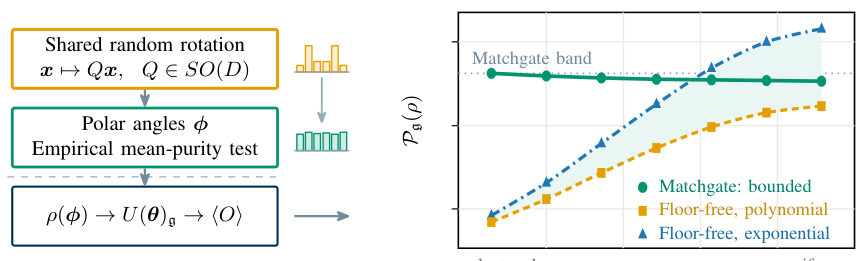
<figcaption class="paper-figure-caption"><b>Fig 1.</b> Fig. 1: Left: A shared random rotation and polar-angle extraction produce encoding angles. A classical acceptance test checks their empirical mean off-diagonal purity before the quantum circuit is run. Right: Schematic purity responses to the angle spread, without a numerical scale. The matchgate family (solid) stays in a narrow band while the floor-free examples (dashed and dash-dotted) approach zero at computational-basis inputs. Their output variances additionally depend on the simple-component dimensions and observable projections in Eq. 1.</figcaption>
</figure>
<figure class="paper-figure-card">
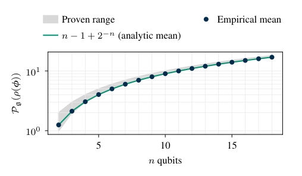
<figcaption class="paper-figure-caption"><b>Fig 2.</b> Fig. 2: Under the uniform prior, the empirical mean of Pg(ρ(ϕ)) matches n −1 + 2−n and stays within [n −1, n], for sizes up to n = 18 qubits.</figcaption>
</figure>
<figure class="paper-figure-card">
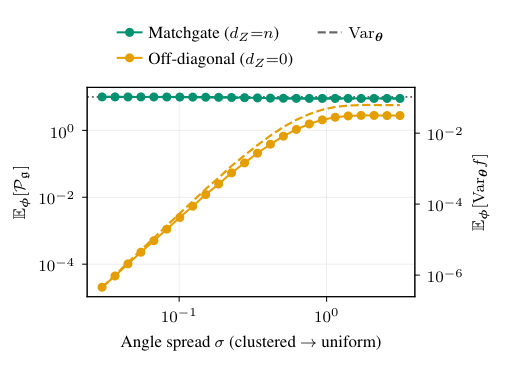
<figcaption class="paper-figure-caption"><b>Fig 3.</b> Fig. 3: Purity and output-variance response to angle clustering at n = 10 under the Ry encoding. As the angle spread σ shrinks toward the computational basis, the mean matchgate purity stays in [n −1, n], whereas the mean off-diagonal purity approaches zero. The right axis (dashed) traces the mean sample-wise output variance Eϕ[Varθ[fθ]] = 2Eϕ[Pg]/ dim g for the in- algebra observable XiXi+1 + YiYi+1 under the ensemble of Eq. 1. Accordingly, the matchgate variance changes little, while the off-diagonal variance approaches zero with its purity.</figcaption>
</figure>
<figure class="paper-figure-card">
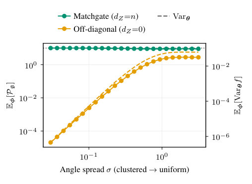
<figcaption class="paper-figure-caption"><b>Fig 4.</b> Fig. 3 contrasts the matchgate purity band with the collapse of the off-diagonal purity as angles approach the computational basis. c) Floor-Free Polynomial Regime: By contrast, the off- diagonal ansatz has polynomial dimension but no Z-diagonal string, so it satisfies dZ(god) = 0 under Ry encoding. Its Pauli basis contains XX and Y Y endpoints at odd separation and XY and Y X endpoints at even separation, joined by interior Z factors [29]. Since ⟨Yk⟩= 0 for the Ry product encoding, only the XX strings contribute, giving</figcaption>
</figure>
<figure class="paper-figure-card">
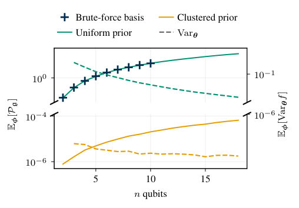
<figcaption class="paper-figure-caption"><b>Fig 5.</b> Fig. 4: Mean purity and sample-wise output variance for the off-diagonal algebra god ∼= so(n) ⊕so(n), which has dZ = 0. On the left axis, the closed form Eq. 3 agrees with brute-force values (markers) and gives linear growth under the uniform prior, whereas clustering near {0, π} suppresses the mean by about five orders of magnitude. The dashed curves on the right axis show the corresponding mean variance 2Eϕ[Pgod]/ dim god for n ≥3. At n = 2 the algebra is abelian, so its zero output variance is omitted from the logarithmic axis.</figcaption>
</figure>
</div>
<p><strong>Summary.</strong> This work investigates how the choice of input data distribution influences the output variance of parameterized quantum circuits, a key factor in training stability. By analyzing the overlap between the input state and the circuit's Lie algebra, the authors derive conditions under which the output variance remains polynomially small in the number of qubits. This provides a theoretical framework for mitigating barren plateau issues in quantum machine learning.</p>
<p><strong>Why it may be interesting.</strong> The rigorous mathematical analysis connecting input statistics (purity) to the training landscape's gradient behavior (variance) provides deep theoretical insight into the limitations of variational quantum algorithms.</p>
<details>
<summary>Detailed structure</summary>
<p><strong>Main problem.</strong> The paper addresses the challenge of 'Barren plateaus' in training parameterized quantum circuits (PQCs) by analyzing how the input data distribution affects the output variance.</p>
<p><strong>Main result.</strong> The output variance can be shown to scale as $1/n$ for certain circuit ansätze (like matchgates) when averaged over inputs, provided the input distribution passes a computable purity threshold.</p>
<p><strong>Method.</strong> The analysis uses algebraic tools, specifically relating output variance to the input's overlap with the circuit's dynamical Lie algebra (g-purity).</p>
<p><strong>Model / system.</strong> The model involves angle-encoded product states $|\psi(\phi)
angle$ evolved by quantum circuits $U(	heta)$ on $n$ qubits. Comparisons are drawn between 'matchgate' and 'off-diagonal' circuit ansätze.</p>
<p><strong>Key observables.</strong> Output variance ($ ext{Var}<em>   heta[f</em> heta]$), algebraic input purity ($   ext{PHS}_g$), and the mean sample-wise output variance.</p>
<p><strong>Important parameters / regimes.</strong> Number of qubits ($n$), circuit depth ($L$), and the nature of the input prior distribution (e.g., uniform vs. clustered).</p>
<p><strong>Assumptions / limitations.</strong> The guarantee on variance holds only when averaged over inputs, and the analysis relies on the DLA being reductive.</p>
<p><strong>Figures summary.</strong> Figures compare purity responses for matchgate vs. other examples, show the effect of shared random rotations on angle uniformity, and plot mean variance vs. re-uploading depth for different input priors.</p>
<p><strong>Paper structure.</strong> The paper builds from establishing the variance formula based on g-purity, comparing the scaling behavior of different ansatzes (matchgate vs. off-diagonal), developing a classical preprocessing certificate based on input purity thresholds, and finally analyzing the effect of input clustering and circuit depth.</p>
</details>
<details>
<summary>Abstract</summary>
<p>Barren plateaus hinder training of parameterized quantum circuits by making loss gradients exponentially small in the number of qubits. For angle-encoded product states, we show how the input distribution affects output variation through algebraic input purity, i.e. the input's overlap with the circuit's dynamical Lie algebra. With the specified readouts and Haar or exact group 2-design sampling, matchgate circuits on $n$ qubits retain output variance of order $1/n$ for every pure product input. The off-diagonal family instead has zero output on computational-basis inputs at any depth and for every parameter choice. Independent uniform angles yield mean variance of the same order as matchgates. A count of diagonal Pauli strings identifies these zero-output endpoints. For any fixed dataset of nonzero inputs with at least $2n$ coordinates, we construct a classical preprocessing certificate. A shared random rotation is accepted only when the dataset's mean purity passes a computable threshold. This certifies mean output variance of order $1/n$ for the off-diagonal family before circuit execution, with a constant expected number of trials. Binary and ternary weighted encodings also recover the independent-angle mean purity from one uniform scalar input. Numerical experiments examine training behavior and extensions to larger algebras. The guarantee concerns output variance averaged over inputs, while successful learning also depends on the task and information preserved by the encoding.</p>
</details>
<p><sub><a href="#top">↑ back to top</a></sub></p>

<p><a id="paper-2610.00547"></a></p>
<h3 id="unifying-and-extending-strong-simulation-of-quantum-circuits"><a href="http://arxiv.org/abs/2610.00547v1">Unifying and Extending Strong Simulation of Quantum Circuits</a></h3>
<p><strong>Authors:</strong> Floris Geerts, Rihan Hai, Matthias Lanzinger, Reinhard Pichler, Emanuel Sallinger, Daniel Unterberger<br>
<strong>Type:</strong> theory · <strong>Category:</strong> quantum information and computing · <strong>PDF:</strong> <a href="https://arxiv.org/pdf/2610.00547v1">https://arxiv.org/pdf/2610.00547v1</a><br>
<strong>Analysis basis:</strong> full PDF text, analyzed in chunks</p>
<div class="figure-strip-hint">↔ Scroll figures horizontally</div>
<div class="paper-figures-scroll">
<figure class="paper-figure-card">
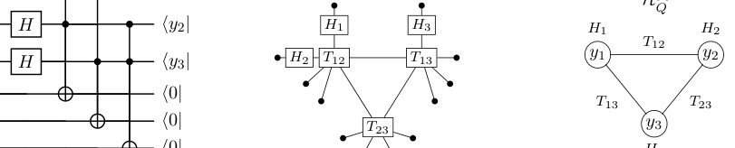
<figcaption class="paper-figure-caption"><b>Fig 1.</b> Figure 2: In GC, Tij denotes the Toffoli with control bits i, j. Black leaves denote input/output boundary nodes. In Hb Q, vertices are the free variables; circles are unary Hadamard scopes, and lines are binary scopes of the Tij factors; recall that constants are irrelevant.</figcaption>
</figure>
<figure class="paper-figure-card">
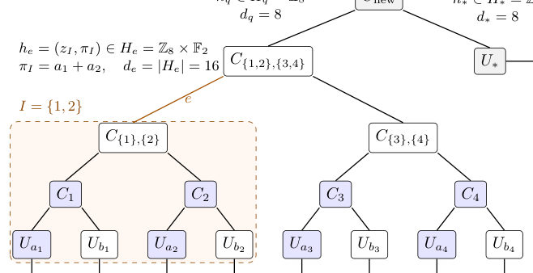
<figcaption class="paper-figure-caption"><b>Fig 2.</b> Figure 4: Exact coefficient TTN for the child bag A ∪B, with k = 4 (Example 6.6). Each proper pair subtree carries a phase residue and one parity bit. Summing the ai legs yields the separator message without increasing the maximum bond dimension 16.</figcaption>
</figure>
<figure class="paper-figure-card">
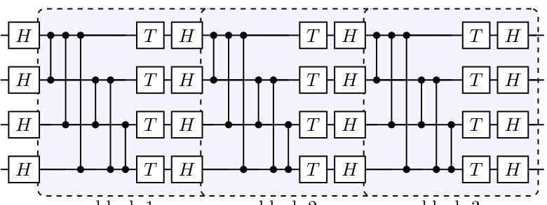
<figcaption class="paper-figure-caption"><b>Fig 3.</b> Figure 5: The circuit C′(4, 3) of (37). Each dashed box is one occurrence of B4 = Z4; T4; H4.</figcaption>
</figure>
</div>
<p><strong>Summary.</strong> This paper unifies the simulation complexity of quantum circuits by reformulating them as Functional Aggregate Queries (FAQs). By using a generalized evaluation scheme, it shows that classical simulation bounds like treewidth and rank-width are all instances of this single framework. This provides a systematic route to identifying new, potentially weaker, but more general criteria for quantum circuit tractability.</p>
<p><strong>Why it may be interesting.</strong> This work provides a powerful, unified algorithmic foundation for analyzing the computational cost of quantum simulation, which is crucial for understanding the limits of classical simulation for quantum hardware.</p>
<details>
<summary>Detailed structure</summary>
<p><strong>Main problem.</strong> The paper aims to establish a unifying mathematical language for determining the exact classical simulation complexity of general quantum circuits.</p>
<p><strong>Main result.</strong> It introduces Functional Aggregate Queries (FAQs) as a unifying framework, demonstrating that various simulation tractability measures (like treewidth and rank-width) can be recovered within this single algorithmic structure.</p>
<p><strong>Method.</strong> The core method involves modeling quantum circuits as sum-product queries (FAQs) and evaluating them using an 'InsideOut' evaluation scheme over various commutative semirings.</p>
<p><strong>Model / system.</strong> The system under study is general quantum circuits, which are mathematically mapped onto the structure of Functional Aggregate Queries (FAQs) defined over a hypergraph.</p>
<p><strong>Key observables.</strong> The primary observable is the exact probability amplitude $\langle b|U_C|a
angle$ computed by the evaluation scheme.</p>
<p><strong>Important parameters / regimes.</strong> Key complexity parameters include treewidth, rank-width, and the newly introduced 'tensor layout symmetry width' ($ ext{tlsw}$).</p>
<p><strong>Assumptions / limitations.</strong> The analysis relies on the existence and properties of the 'InsideOut' evaluation algorithm and the ability to map quantum evolution to FAQ evaluation.</p>
<p><strong>Figures summary.</strong> Not specified in detail, but the notes mention figures illustrating circuit structures like $C'(4, 3)$ and the graph $G_n$ used for analyzing graph parameters.</p>
<p><strong>Paper structure.</strong> The paper progresses by first defining FAQs as the unifying language, then showing how known simulation bounds (treewidth, rank-width) are recovered by choosing appropriate semirings, and finally introducing the novel $    ext{tlsw}$ parameter.</p>
</details>
<details>
<summary>Abstract</summary>
<p>We establish functional aggregate queries (FAQs) as a unifying language for exact classical simulation of quantum circuits. A circuit becomes a sum-product query: factors encode gates, internal wire variables are aggregated, and free boundary variables index transition amplitudes. The central insight is that distinct sources of simulation tractability can be exploited within the same InsideOut evaluation scheme. The query specifies what is computed; the evaluation plan, semiring, and representation of intermediate factors determine the cost.   This view unifies structural and algebraic simulation guarantees. With explicit factor representations, FAQ evaluation recovers the treewidth bound for tensor-network contraction and yields finer sparsity-sensitive bounds via fractional covers. Over a formal phase semiring, compressed intermediate factors recover rank-width-based simulation for compatible quadratic phase representations. For Clifford circuits, affine-quadratic factors are closed under multiplication and marginalization and remain polynomial in size, yielding polynomial-time exact amplitude computation without any bounded-width assumption.   Beyond these recoveries, the framework yields a new tractability criterion: tensor layout symmetry width. This parameter combines local cut-rank with separator symmetry through exact tree-tensor representations. We give a constructive evaluation bound and exhibit a circuit family with bounded tensor layout symmetry width but unbounded phase-graph rank-width and circuit line-graph treewidth. These results establish representation-aware FAQ evaluation as a common algorithmic foundation for classical simulation and a systematic route to new tractable regimes.</p>
</details>
<p><sub><a href="#top">↑ back to top</a></sub></p>

<p><a id="paper-2610.01941"></a></p>
<h3 id="universality-sacrifices-reliability-in-classical-quantum-channel-coding"><a href="http://arxiv.org/abs/2610.01941v1">Universality Sacrifices Reliability in Classical-Quantum Channel Coding</a></h3>
<p><strong>Authors:</strong> Kaito Watanabe, Masahito Hayashi, Takaya Matsuura, Hao-Chung Cheng<br>
<strong>Type:</strong> theory · <strong>Category:</strong> quantum information and computing · <strong>PDF:</strong> <a href="https://arxiv.org/pdf/2610.01941v1">https://arxiv.org/pdf/2610.01941v1</a><br>
<strong>Analysis basis:</strong> full PDF text, analyzed in chunks</p>
<div class="figure-strip-hint">↔ Scroll figures horizontally</div>
<div class="paper-figures-scroll">
<figure class="paper-figure-card">
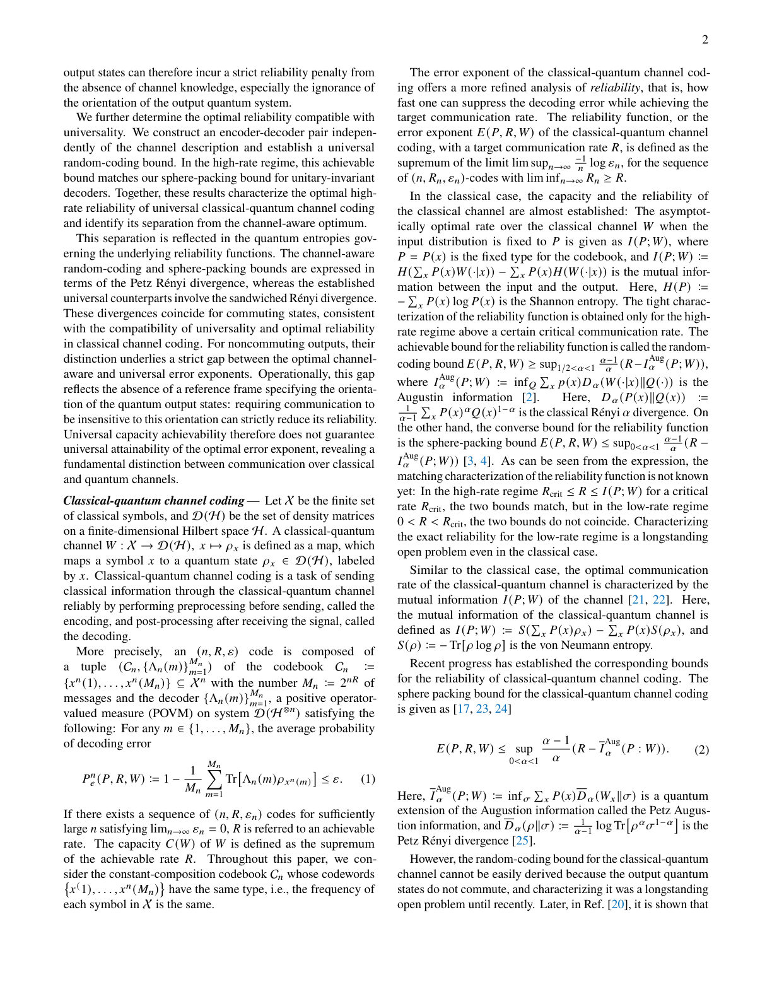
<figcaption class="paper-figure-caption"><b>Fig 1.</b> Low-resolution page preview, page 2</figcaption>
</figure>
<figure class="paper-figure-card">
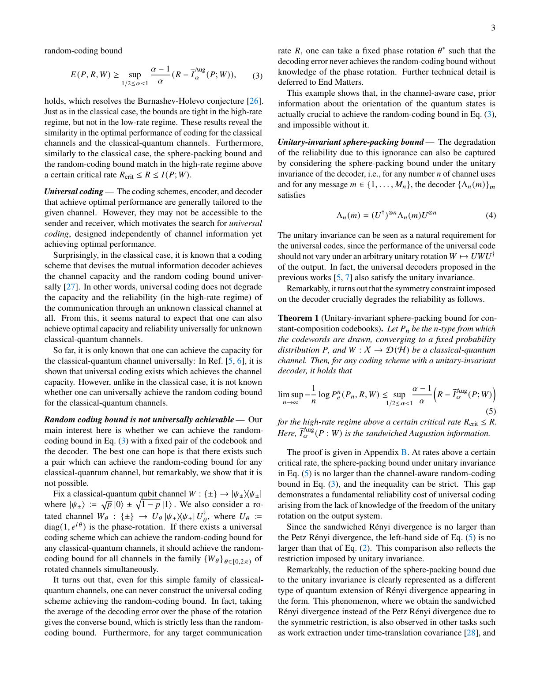
<figcaption class="paper-figure-caption"><b>Fig 2.</b> Low-resolution page preview, page 3</figcaption>
</figure>
<figure class="paper-figure-card">
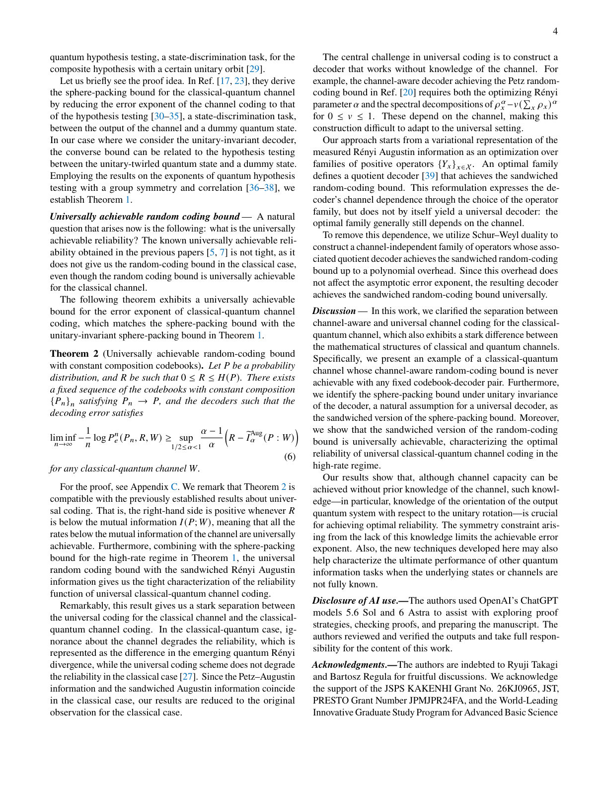
<figcaption class="paper-figure-caption"><b>Fig 3.</b> Low-resolution page preview, page 4</figcaption>
</figure>
<figure class="paper-figure-card">
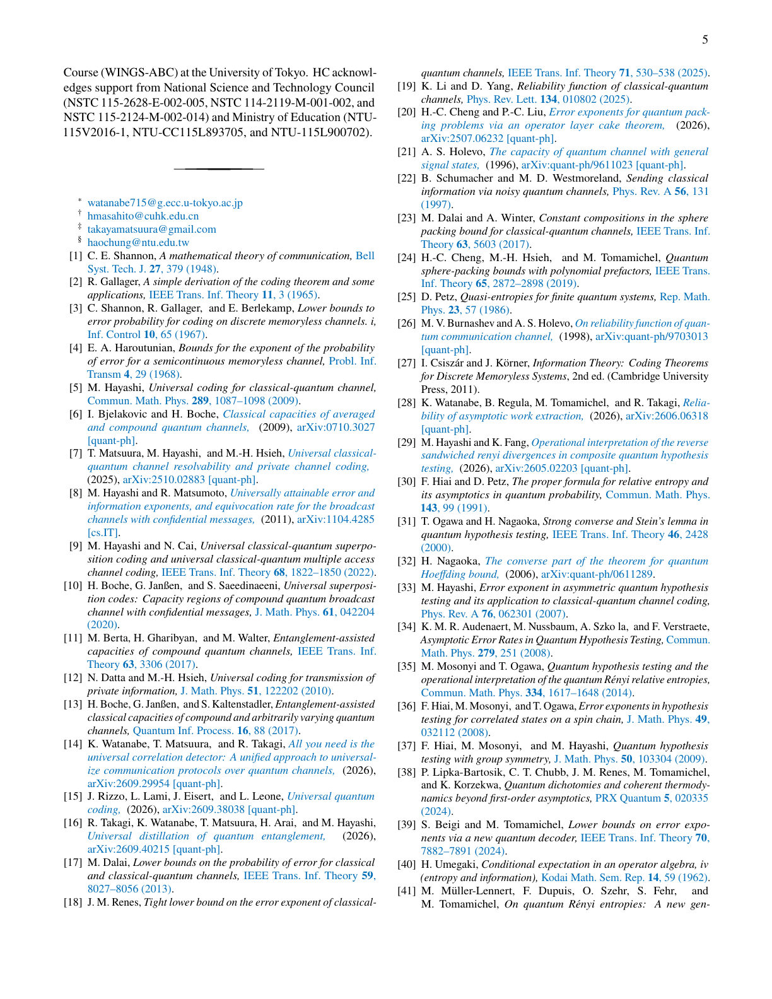
<figcaption class="paper-figure-caption"><b>Fig 4.</b> Low-resolution page preview, page 5</figcaption>
</figure>
<figure class="paper-figure-card">
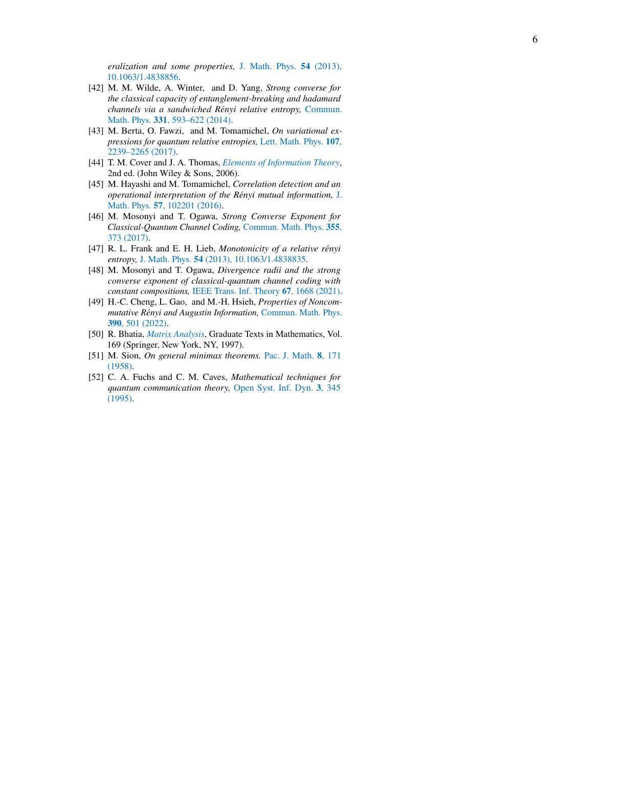
<figcaption class="paper-figure-caption"><b>Fig 5.</b> Low-resolution page preview, page 6</figcaption>
</figure>
</div>
<p><strong>Summary.</strong> This work analyzes the fundamental trade-off between optimal performance when a quantum channel is perfectly known versus when a fixed, universal coding scheme must be used. The authors prove that this trade-off results in a strict loss of reliability for classical-quantum channels due to the non-commutativity of output states. This gap is mathematically characterized by the difference between Petz and sandwiched Rényi divergences.</p>
<p><strong>Why it may be interesting.</strong> The fundamental distinction between channel-aware and universal coding bounds provides a concrete measure of the information cost associated with making coding schemes robust against unknown channel parameters, which is a core topic in quantum communication theory.</p>
<details>
<summary>Detailed structure</summary>
<p><strong>Main problem.</strong> The paper compares the achievable optimal reliability in classical-quantum channel coding when the channel is known (channel-aware) versus when it must be coded using a fixed scheme independent of the specific channel realization (universal coding).</p>
<p><strong>Main result.</strong> For classical-quantum channels, universal coding sacrifices optimal reliability compared to the channel-aware optimum, a gap explained by the non-commutativity of output quantum states.</p>
<p><strong>Method.</strong> The authors derive and compare error exponents using Petz and sandwiched Rényi divergences, establishing converse bounds and constructing achievable bounds for both scenarios.</p>
<p><strong>Model / system.</strong> The system models a classical-quantum channel $W: X 	o D(H)$, mapping classical symbols to quantum states. The analysis focuses on the error probability and its asymptotic exponent (reliability) in the high-rate regime.</p>
<p><strong>Key observables.</strong> Error exponent (reliability), Petz Rényi divergence, sandwiched Rényi divergence, and the achievable rate $R$.</p>
<p><strong>Important parameters / regimes.</strong> The regularization parameter $\alpha \in [1/2, 1)$ and the rate $R$.</p>
<p><strong>Assumptions / limitations.</strong> The analysis assumes constant-composition codebooks and relies on the natural assumption of unitary invariance for universal decoders.</p>
<p><strong>Paper structure.</strong> The paper progresses by first establishing bounds for classical channels, then tackling the classical-quantum case. It derives the channel-aware bound using Petz divergences, contrasts this with the universal bound derived under unitary invariance, and finally characterizes the optimal universal reliability using sandwiched Rényi divergences.</p>
</details>
<details>
<summary>Abstract</summary>
<p>Universal channel coding enables communication without a complete description of the channel. For classical channels, universal codes can attain both capacity and the optimal high-rate reliability. We show that this compatibility fails for classical-quantum channels in general; that is, the optimal reliability in the channel-aware scenario is not always achievable with universal coding due to the ignorance of the unitary rotation of the output system. We exhibit a family of classical-quantum channels for which one cannot achieve the channel-aware optimal reliability by a fixed coding scheme. We further derive a converse bound on the reliability for unitary-invariant decoders, a natural assumption for the universal coding scheme, that can be strictly smaller than the optimal channel-aware error exponent. Conversely, we construct a channel-independent encoder-decoder pair and establish a universally achievable bound on the reliability that matches this converse bound in the high-rate regime, thereby characterizing the optimal universal reliability. Specifically, the channel-aware and universal exponents are governed by the Petz and sandwiched Rényi divergences, respectively. These divergences coincide for commuting outputs but differ for noncommuting ones, explaining why universality preserves optimal reliability classically but can reduce it quantumly. Our results showcase the fundamental reliability cost of performing the classical-quantum channel coding task universally.</p>
</details>
<p><sub><a href="#top">↑ back to top</a></sub></p>
</details>
<h2 id="secondary-cond-mat-archives">Secondary cond-mat archives</h2>
<p><em>Papers from cond-mat.mtrl-sci, mes-hall, other, soft, supr-con. These archives are de-prioritized — they appear at the end regardless of relevance score.</em></p>
<h3 id="relevant-in-secondary-archives-19">Relevant in secondary archives (19)</h3>

<p><a id="paper-2610.00473"></a></p>
<h3 id="strongly-coupled-ultracompressed-self-cavity-plasmon-polaritons-at-millikelvin-temperatures"><a href="http://arxiv.org/abs/2610.00473v1">Strongly coupled ultracompressed self-cavity plasmon polaritons at millikelvin temperatures</a></h3>
<p><strong>Authors:</strong> Luojia Zhang, Andrew T. Pierce, Xuepeng Wang, Simon Reinhardt, Kenji Watanabe, Takashi Taniguchi, Kin Fai Mak, Jie Shan, Debanjan Chowdhury, Valla Fatemi<br>
<strong>Type:</strong> experiment · <strong>Category:</strong> other · <strong>PDF:</strong> <a href="https://arxiv.org/pdf/2610.00473v1">https://arxiv.org/pdf/2610.00473v1</a><br>
<strong>Analysis basis:</strong> full PDF text, analyzed in chunks
<strong>Topic relevance:</strong> 🔥 <code>quantum optics experiment</code> <strong>4/5</strong> · <code>analog quantum simulation</code> <strong>3/5</strong> · <code>driven-dissipative phase transition</code> <strong>3/5</strong> · <code>Tavis-Cummings &amp; cavity-many-emitter</code> <strong>2/5</strong> · <code>quantum measurements</code> <strong>2/5</strong> · <code>QC/QI experiment</code> <strong>1/5</strong> · <code>correlated / nonlocal dissipation</code> <strong>1/5</strong> · <code>interference shaping light</code> <strong>1/5</strong> · <code>methods for driven-dissipative</code> <strong>1/5</strong> · <code>non-equilibrium universality</code> <strong>1/5</strong></p>
<div class="figure-strip-hint">↔ Scroll figures horizontally</div>
<div class="paper-figures-scroll">
<figure class="paper-figure-card">
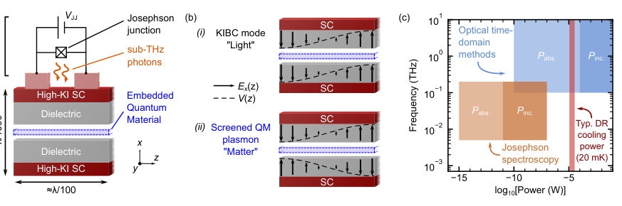
<figcaption class="paper-figure-caption"><b>Fig 1.</b> Fig. 1. Kinetic inductance broadside cavities (KIBCs) probed by Josephson spectroscopy. (a) Schematic side view of a KIBC coupled to a Josephson spectrometer. The KIBC is defined by high-KI superconductors separated by dielectric layers. Low-dimensional quantum materials can be sandwiched between the two layers. The cavity is connected to a Josephson junction that acts as an emitter and detector of sub-THz photons, allowing for measurement of the high-frequency electrodynamic response of the KIBC. (b) Structure of the plasmonic modes of a trilayer structure. Solid arrows label the orientation of the transverse electric field Ex. Dashed lines indicate the profile of the interlayer voltages....</figcaption>
</figure>
<figure class="paper-figure-card">
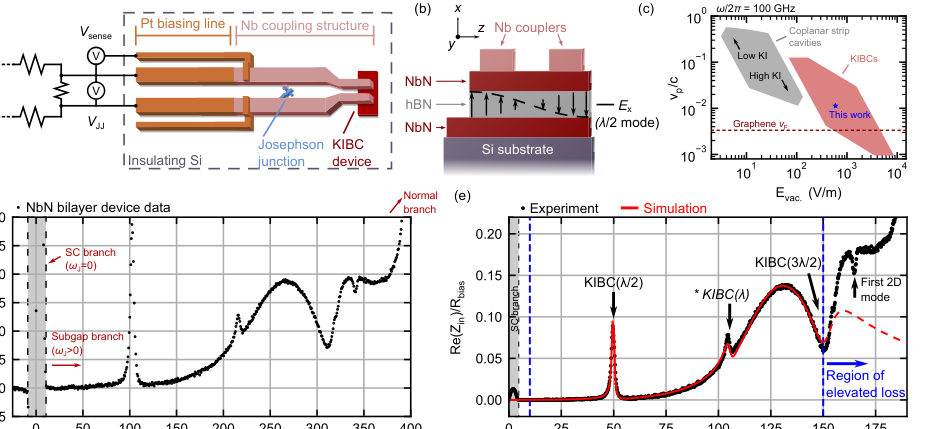
<figcaption class="paper-figure-caption"><b>Fig 2.</b> Fig. 2. Josephson spectroscopy of a superconductor/superconductor KIBC. (a) Simplified schematic of the Joseph- son spectroscopy circuit. An insulating Si substrate hosts an aluminum Josephson junction connected to Nb electrodes, which are in turn connected to a lossy Pt transmission line. The Pt transmission line is wire bonded to an on-chip voltage divider on a second, separate Si substrate (see Supplementary Information). The voltages Vsense and VJJ are probed by measuring across the Pt transmission line electrodes, and the DC junction current is given by Vsense/Rbias. (b) Side view of the NbN/hBN bilayer KIBC. (c) Normalized velocity vp/c versus vacuum electric field Evac. for KIBCs...</figcaption>
</figure>
<figure class="paper-figure-card">
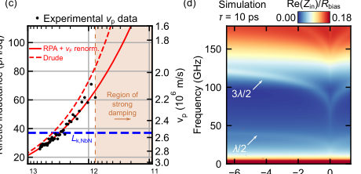
<figcaption class="paper-figure-caption"><b>Fig 3.</b> Fig. 3. Long-lived hybrid graphene/high-KI super- conductor plasmons. (a) Schematic of NbN-graphene bi- layer plasmonic cavity structure. (b) Experimental Joseph- son impedance spectra of an NbN/graphene bilayer device measured as a function of density. (c) RPA-corrected KI of graphene as a function of density compared with that of NbN. The corresponding mode velocity is shown on the right axis. The red curves are obtained from simulations using the effec- tive circuit model. The black markers correspond to velocities extracted from the data in panel b (see text). Lk,NbN = 37 pH/sq and εhBN = 3.5ε0 are found to give good agreement be- tween the RPA simulation and the experimental data...</figcaption>
</figure>
<figure class="paper-figure-card">
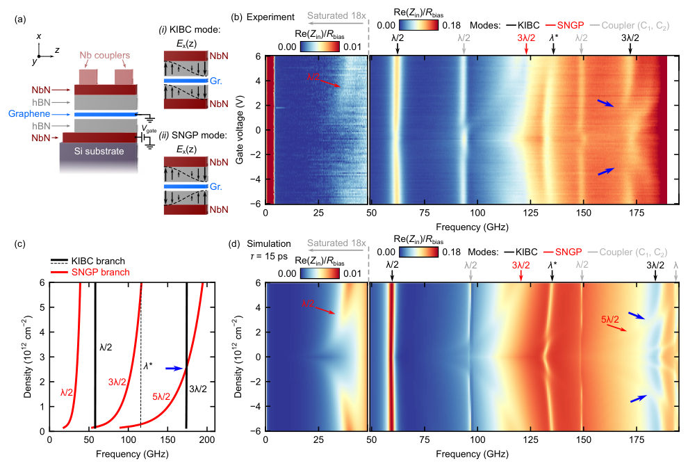
<figcaption class="paper-figure-caption"><b>Fig 4.</b> Fig. 4. Hybrid graphene-superconducting confined plasmons and strong cavity coupling. (a) Schematic of NbN- graphene-NbN plasmonic trilayer structure. (b) Experimental Josephson impedance spectra of an NbN/graphene/NbN trilayer device measured as a function of density. Frequencies below 50 GHz are saturated to highlight the weak SNGP(λ/2) mode. The blue arrows indicate avoided crossings (corresponding to the level crossing highlighted in Fig. 4c). (c) Dispersion of the KIBC(λ/2) and SNGP(λ/2) modes, along with several harmonics. The mode frequencies are calculated for an infinite NbN/graphene/NbN trilayer system with no Nb couplers. λ/2 is set to 34 µm. The starred KIBC(λ) mode is formally...</figcaption>
</figure>
</div>

<p><strong>Summary.</strong> The research introduces a novel, superconducting-based spectrometer to probe plasmonic cavities formed in Van der Waals heterostructures at millikelvin temperatures. By coupling a superconducting cavity mode with a graphene-derived plasmon mode, the authors successfully demonstrated strong light-matter coupling. This platform enables simultaneous spectroscopy and transport measurements crucial for advancing cavity quantum matter research.</p>
<p><strong>Why it may be interesting.</strong> This work directly bridges cavity Quantum Electrodynamics (QED) principles with solid-state 2D materials physics, providing a highly controllable, low-loss platform for studying light-matter interaction in engineered quantum systems at cryogenic temperatures.</p>
<details>
<summary>Detailed structure</summary>
<p><strong>Main problem.</strong> The challenge is realizing and spectroscopically probing cavity-modified phases of matter in Van der Waals heterostructures at extremely low temperatures and sub-THz frequencies.</p>
<p><strong>Main result.</strong> The authors successfully demonstrated a platform using superconducting circuits and graphene to observe underdamped cavity plasmon polaritons and evidence of strong light-matter coupling via avoided crossings.</p>
<p><strong>Method.</strong> The measurement relies on a novel, millikelvin-compatible sub-THz spectrometer based on Josephson junctions, which acts as both the emitter and detector of the sub-THz radiation.</p>
<p><strong>Model / system.</strong> The physical system involves Van der Waals heterostructures, specifically superconducting layers forming a Kinetic Inductance Broadside Cavity (KIBC) coupled to an integrated graphene layer, forming a tunable hybrid plasmonic system.</p>
<p><strong>Key observables.</strong> Underdamped cavity plasmon polariton frequencies, avoided crossings between cavity and matter modes, and the DC junction current ($I_{DC}$) measured via Josephson spectroscopy.</p>
<p><strong>Important parameters / regimes.</strong> Millikelvin temperatures ($T \approx 10 	ext{ mK}$), sub-THz frequencies (down to 0.04 THz), and electromagnetic volume compression of order $10^7$.</p>
<p><strong>Assumptions / limitations.</strong> The analysis relies on an effective circuit model and Random Phase Approximation (RPA) calculations for graphene's response.</p>
<p><strong>Figures summary.</strong> Figures illustrate the schematic of the Josephson spectrometer coupled to the KIBC, the measured $I-V$ characteristics, and the impedance spectra showing mode resonances for both KIBC and graphene-coupled structures.</p>
<p><strong>Paper structure.</strong> The paper introduces the need for the platform, details the superconducting circuit and graphene integration, presents the measurement methodology using Josephson spectroscopy, and finally reports the observation of coupled plasmon modes.</p>
</details>
<details>
<summary>Abstract</summary>
<p>Van der Waals heterostructures exhibit self-cavity resonances from sub-terahertz to terahertz frequencies and thus offer an attractive route toward realizing cavity-modified phases of matter. Spectroscopy of such systems calls for high frequency resolution at millikelvin temperatures, which is extremely challenging with existing methods. Here we demonstrate a new platform for realizing and probing such systems. Superconducting layers define self-cavity structures with electromagnetic volume compression of order $10^7$. With an integrated graphene layer, we observe underdamped cavity plasmon polaritons at frequencies as low as 0.04 THz and which exhibit avoided crossings with cavity modes. To measure such spectra, we deploy a millikelvin-compatible sub-THz spectrometer based on a superconducting circuit. This work paves the way for simultaneous spectroscopy and transport measurements of cavity-matter hybrid systems at millikelvin temperatures.</p>
</details>
<p><sub><a href="#top">↑ back to top</a></sub></p>

<p><a id="paper-2610.01100"></a></p>
<h3 id="gate-dispersive-charge-detection-in-gesige-quantum-dots"><a href="http://arxiv.org/abs/2610.01100v1">Gate Dispersive Charge Detection in Ge/SiGe Quantum Dots</a></h3>
<p><strong>Authors:</strong> M. R. Tanvir, E. Sajadi, M. Veldhorst, G. Scappucci, J. Salfi<br>
<strong>Type:</strong> experiment · <strong>Category:</strong> quantum information and computing · <strong>PDF:</strong> <a href="https://arxiv.org/pdf/2610.01100v1">https://arxiv.org/pdf/2610.01100v1</a><br>
<strong>Analysis basis:</strong> full PDF text, analyzed in chunks
<strong>Topic relevance:</strong> 🔥 <code>QC/QI experiment</code> <strong>4/5</strong> · <code>quantum measurements</code> <strong>3/5</strong></p>
<div class="figure-strip-hint">↔ Scroll figures horizontally</div>
<div class="paper-figures-scroll">
<figure class="paper-figure-card">
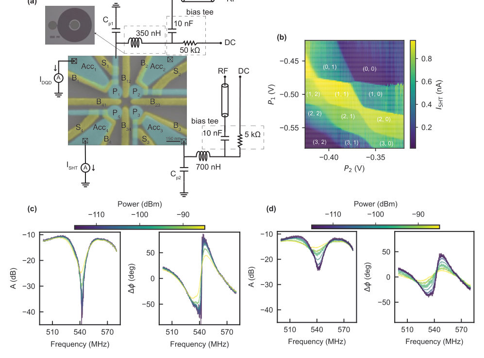
<figcaption class="paper-figure-caption"><b>Fig 1.</b> FIG. 1. Measurement circuit and characterization of the RF matching circuits. (a) Schematic of the measurement setup together with a false-colored SEM image of the Ge/SiGe QD device with lateral gates in a lower layer (yellow) and upper layer (teal) separated by gate dielectric. Superconducting NbTiN spiral inductors located on separate Si chips are connected via wirebonds to the QD chip: a 350 nH inductor is connected to plunger gate P1 for gate-dispersive readout (optical micrograph shown in the inset) and a 700 nH inductor is connected to an ohmic contact to implement a conventional RF single-hole transistor (RF-SHT). (b) SHT current as a function of plungers P1 and P2 with gate voltage...</figcaption>
</figure>
<figure class="paper-figure-card">
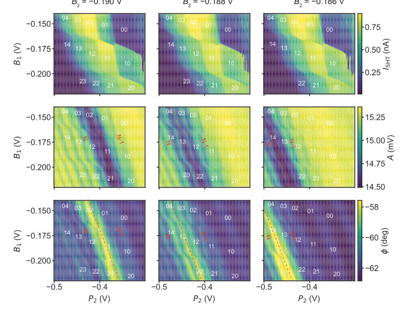
<figcaption class="paper-figure-caption"><b>Fig 2.</b> FIG. 2. Evolution of the DQD stability diagram as the SHB is tuned by gate B2. Each column corresponds to a different value of B2, while the rows show the SHT current (top), the amplitude (middle), and phase (bottom) of the gate-attached resonator. The SHT is compensated to stay tuned onto the shoulder of a Coulomb oscillation. Charge states are labelled with the notation nm, n holes in QD1 and m holes in QD2, using the SHT stability diagram. The SHB charge transition (diagonal red stripe) is shifted across the stability diagram by varying B2 and allow detection of the DQD charge. QD2 loading transitions are readily resolved in the RF-GD response, and interdot and loading transitions are...</figcaption>
</figure>
<figure class="paper-figure-card">
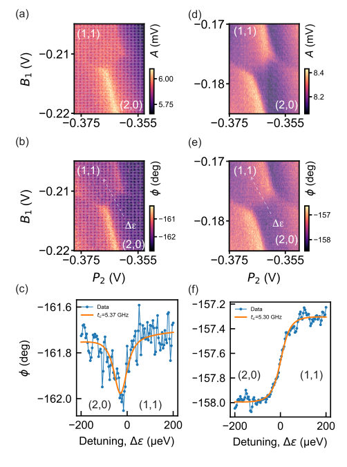
<figcaption class="paper-figure-caption"><b>Fig 3.</b> FIG. 3. Comparison of the RF-GD and RF-GD-SHB re- sponse. (a),(b) RF-GD amplitude and phase response near the (1, 1)–(2, 0) interdot charge transition with SHB off- resonance. (c) Phase response (average of 3 traces) along the detuning axis in (b), with the characteristic quantum- capacitance dip used to extract the interdot tunnel cou- pling. (d),(e) Same as (a),(b) but with the RF-GD-SHB on-resonance, and operating as a charge sensor (f) Phase re- sponse (average of 3 traces) along the detuning axis in (e), with the broadened step response for the SHB. The SHB im- proves the SNR by a factor of approximately 20, from 18.5 to 372. We verified the noise in panels (c) and (f) to be the...</figcaption>
</figure>
<figure class="paper-figure-card">
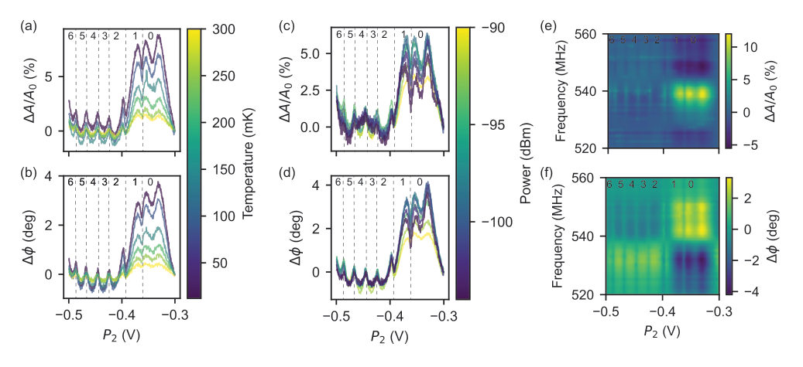
<figcaption class="paper-figure-caption"><b>Fig 4.</b> FIG. 4. Dependence of the gate-dispersive readout on temperature, RF excitation power, and probe frequency. All measure- ments are performed along a line cut through the charge stability diagram at B1 = −0.18 V (shown in Appendix Fig. 7), containing signatures of both the direct gate-dispersive readout of the reservoir-DQ2 charge transitions and the auxiliary-dot- assisted readout. The QD2 occupation number n2 is labeled. (a,b) Reflected amplitude and phase as a function of temperature at -95 dBm power. The signal amplitude decreases markedly with increasing temperature, indicating that increased temperature- dependent dissipative loss in the substrate and dielectric dominates over thermal...</figcaption>
</figure>
<figure class="paper-figure-card">
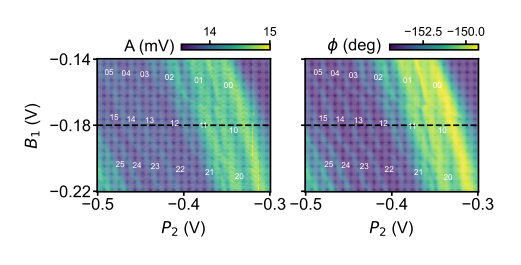
<figcaption class="paper-figure-caption"><b>Fig 5.</b> FIG. 7. Charge stability diagram indicating the line cut at B1 = −0.18 V used to investigate the dependence of the gate- tank response on temperature, excitation power, and probe frequency. The dot-occupation label nm represents n holes in QD1 and m holes in QD2. Compared with the stability diagram in the first column of Fig. 2, the measurements were performed at B12 = −0.125 V instead of −0.127 V, and at fprobe = 550 MHz instead of 541.8 MHz.</figcaption>
</figure>
</div>

<p><strong>Summary.</strong> This paper demonstrates a novel, compact method for reading out charge states in Ge/SiGe quantum dot qubits using RF gate-dispersive detection. By integrating an auxiliary localized quantum dot (SHB), the authors significantly boost the signal-to-noise ratio for detecting interdot charge transitions. This establishes a powerful, scalable readout approach for solid-state spin qubits.</p>
<p><strong>Why it may be interesting.</strong> The work directly addresses scalable quantum hardware by presenting a robust, compact readout mechanism crucial for characterizing and controlling spin qubits, which is central to quantum computing.</p>
<details>
<summary>Detailed structure</summary>
<p><strong>Main problem.</strong> The primary challenge is developing compact and high-fidelity readout methods for spin qubits implemented in Ge/SiGe quantum dots.</p>
<p><strong>Main result.</strong> The incorporation of an auxiliary localized quantum dot (SHB) enhances the signal-to-noise ratio (SNR) for detecting interdot transitions by a factor of 20 compared to direct gate-dispersive readout.</p>
<p><strong>Method.</strong> The authors employed RF gate-dispersive (GD) charge readout, comparing it against standard SHT measurements, and optimizing the readout using an auxiliary dot.</p>
<p><strong>Model / system.</strong> The system is a laterally gated Double Quantum Dot (DQD) fabricated in Ge/SiGe heterostructures, augmented with a Single Hole Box (SHB) acting as an auxiliary localized QD state.</p>
<p><strong>Key observables.</strong> Signal-to-Noise Ratio (SNR), RF amplitude/phase response, and charge transition lines on stability diagrams.</p>
<p><strong>Important parameters / regimes.</strong> DQD coupling strength ($t_c \approx 5$ GHz), measurement time ($t_m$), and operating temperature (down to 10 mK).</p>
<p><strong>Assumptions / limitations.</strong> The SNR is ultimately limited by dielectric loss, which compromises impedance matching at higher power levels.</p>
<p><strong>Figures summary.</strong> Figures illustrate the measurement circuit schematic, stability diagrams showing DQD and SHB resonances, and plots detailing the temperature and RF power dependence of the RF-GD response.</p>
<p><strong>Paper structure.</strong> The paper progresses from establishing the need for compact readout, demonstrating the RF-GD technique, quantifying the SNR enhancement provided by the SHB, and finally analyzing the dependence of the readout signal on temperature and RF power.</p>
</details>
<details>
<summary>Abstract</summary>
<p>Spin qubits are an attractive platform for scalable quantum information processing, and recently, laterally gated quantum dots (QDs) in Ge heterostructures have emerged as a leading implementation of spin qubits. To date, RF single-hole transistors (SHT) and integrated superconducting resonators have been used for spin and charge readout, but their size can pose challenges. Here we demonstrate compact RF gate-dispersive charge readout of a Ge double QD (DQD), and a single hole box (SHB)-DQD system. We resolve QD loading and interdot transitions with both techniques. We find that the SHB enhances the interdot signal-to-noise ratio (SNR) of our 540 MHz circuit by a factor of 20 for a DQD coupling $t_c \approx 5$ GHz, providing a unity-SNR at 135 microseconds, c.f. for 2.7 miliseconds for the direct detection. Power- and temperature-dependent measurements verify that SNR is limited by dielectric loss which compromises impedance matching. These results establish a compact readout approach based on gate-dispersive detection for Ge/SiGe heterostructure QDs.</p>
</details>
<p><sub><a href="#top">↑ back to top</a></sub></p>

<p><a id="paper-2610.01200"></a></p>
<h3 id="phonon-interference-induced-by-defect-pairs"><a href="http://arxiv.org/abs/2610.01200v1">Phonon interference induced by defect pairs</a></h3>
<p><strong>Authors:</strong> Ran-Bo Yang, Ming-Hao Li, Chun-Yu Cai, Yue-Wen Wang, Zhi-Qing Li, Li-Xia Zhao, Zi-Wu Wang<br>
<strong>Type:</strong> theory · <strong>Category:</strong> other · <strong>PDF:</strong> <a href="https://arxiv.org/pdf/2610.01200v1">https://arxiv.org/pdf/2610.01200v1</a><br>
<strong>Analysis basis:</strong> full PDF text, analyzed in chunks
<strong>Topic relevance:</strong> <code>interference shaping light</code> <strong>3/5</strong> · <code>Keldysh / 2PI / non-Gaussian methods</code> <strong>2/5</strong> · <code>analog quantum simulation</code> <strong>2/5</strong> · <code>methods for driven-dissipative</code> <strong>2/5</strong> · <code>correlated / nonlocal dissipation</code> <strong>1/5</strong> · <code>driven-dissipative phase transition</code> <strong>1/5</strong> · <code>non-equilibrium universality</code> <strong>1/5</strong></p>
<div class="figure-strip-hint">↔ Scroll figures horizontally</div>
<div class="paper-figures-scroll">
<figure class="paper-figure-card">
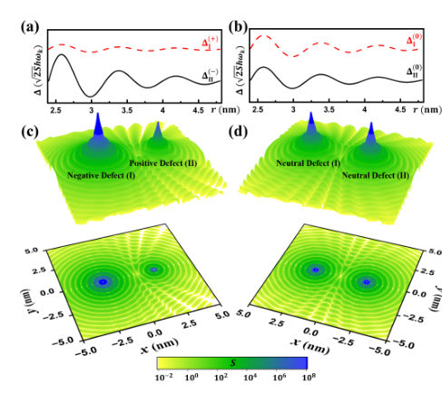
<figcaption class="paper-figure-caption"><b>Fig 1.</b> FIG. 1: The spatial evolution of the oscillation amplitudes of lattice waves induced by positive-negative defects pair (a) and neutral-neutral defect pair (b); The corresponding quantum interference patterns of lattice waves for two types of defect pairs are plotted in (c) and (d), where the selected phonon frequency ωk =76 THz and the wave vector k =7.8 nm−1</figcaption>
</figure>
<figure class="paper-figure-card">
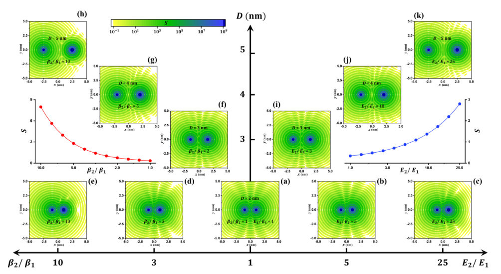
<figcaption class="paper-figure-caption"><b>Fig 2.</b> FIG. 2: The evolution of phonon coherent patterns induced by neutral defect pairs with the ratios of energy-level depth (E2/E1) and the localization strength parameter (β1/β2) for defect pairs and the spatial distance between two defects. Huang-Rhys factors that arising from the contribution of the selective phonon mode (ωk = 76 THz) via the spatial integral around defect pairs as function of the ratio of E2/E1 and β1/β2 in the right-hand and left-hand insets, respectively. The energy-level depth E1=0.1 eV among the bandgap for defect I is adopted.</figcaption>
</figure>
<figure class="paper-figure-card">
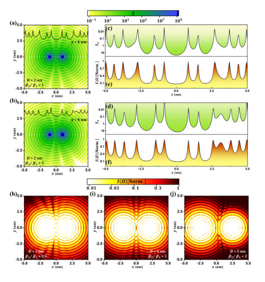
<figcaption class="paper-figure-caption"><b>Fig 3.</b> FIG. 3: The spatial evolution of interference intensities shown by green shadow lines in (c) and (d) along the x axis extracted from symmetry (a) and asymmetry (b) coherent patterns in- duced by neutral defect pairs with the localization ratio pa- rameter β1/β2 =1 and 3, respectively, at fixed energy-level depth, in which the corresponding simulated spanning spec- troscopies are given as shown by red shadow lines in (e) and (f). (h)-(j) show the simulated spanning spectroscopies for in- terference patterns induced by defect pairs with four different localization ratios parameters within their coherent duration scales.</figcaption>
</figure>
</div>

<p><strong>Summary.</strong> This paper develops a theoretical model to study phonon interference generated by pairs of defects in a solid lattice. By relating the interference fringe intensities to the measurable Huang-Rhys factor, the authors show that defect pair parameters can control the emergence of novel quantum states, such as Dirac-like topological phases. This suggests that ultrafast optical spectroscopy is a powerful tool to probe these fundamental quantum dynamics.</p>
<p><strong>Why it may be interesting.</strong> This work bridges concepts from solid-state physics (defects, electron-phonon coupling) with quantum phenomena (topological states, coherent dynamics), making it relevant for open quantum systems and quantum optics.</p>
<details>
<summary>Detailed structure</summary>
<p><strong>Main problem.</strong> The study investigates phonon interference induced by defect pairs to understand nonadiabatic electron-phonon coupling dynamics under non-equilibrium conditions.</p>
<p><strong>Main result.</strong> The model predicts that defect pairs can exhibit novel quantum states, such as Dirac-like or nodal-line topological states, and that ultrafast optical spectroscopy can reveal these quantum signatures.</p>
<p><strong>Method.</strong> The authors propose a theoretical model based on the Huang-Rhys theory to calculate the superposition and interference of lattice waves launched independently by two defects.</p>
<p><strong>Model / system.</strong> The system involves lattice waves in a solid material driven by two localized defects. The model uses the Huang-Rhys factor to quantify the coupling and describes the interference intensity as a superposition of fields from the two defects.</p>
<p><strong>Key observables.</strong> Phonon interference fringe intensities, which are directly related to the measurable Huang-Rhys factor, and spectroscopic fingerprints.</p>
<p><strong>Important parameters / regimes.</strong> Defect pair internal parameters, including charge states, spatial distance (D), energy-level depth (E), and localization strength (beta).</p>
<p><strong>Assumptions / limitations.</strong> The analysis assumes fixed frequency and fixed initial phase difference for the two lattice waves, and acknowledges the rapid decay of lattice waves away from the defect center.</p>
<p><strong>Figures summary.</strong> Figures illustrate the spatial evolution of oscillation amplitudes and quantum interference patterns for different defect pair types, and show the matching between simulated interference fringes and spectroscopic intensities.</p>
<p><strong>Paper structure.</strong> The paper develops a theoretical model for phonon interference, analyzes how internal defect parameters modify the interference geometry, and simulates the resulting ultrafast optical spectroscopy to connect theory to measurable quantities.</p>
</details>
<details>
<summary>Abstract</summary>
<p>The coherent dynamics of lattice waves is of significant importance for exploring the nonadiabatic phenomena of the electron-phonon coupling under nonequilibrium conditions. Here, we propose a theoretical model for phonon interference induced by a defect pair, in which lattice waves with the selective modes are launched independently by each of defects due to the strongly local electron-phonon coupling. We find that the intensities of phonon interference fringes could be directly evaluated by a measurable quantity in experiments--Huang-Rhys factor, and the geometry of interference patterns could be modified by the internal parameters of defect pair, including the charge states, spatial distance, energy-level depth and localization strength. In particular, several novel quantum states, such as the Dirac-like and nodal-line topological states are emerged for the appropriate internal parameters. Furthermore, using Huang-Rhys model, we simulate the ultrafast optical spectroscopy in the phonon interference duration when defect pairs are excited as the color centers, where interference fringes are perfectly matched by intensities of spectrum, similar to the $\textit{lock-key}$ pattern. These results show that defect pair, serving as the driven force for the coherent dynamical processes for multidegrees of freedom, offers an ideal platform to explore fundamental quantum phenomena in nonequilibrium and ultrafast physics.</p>
</details>
<p><sub><a href="#top">↑ back to top</a></sub></p>

<p><a id="paper-2610.00768"></a></p>
<h3 id="tunable-electron-quantum-optics-in-graphene-slit-junctions"><a href="http://arxiv.org/abs/2610.00768v1">Tunable Electron Quantum Optics in Graphene Slit Junctions</a></h3>
<p><strong>Authors:</strong> Mohamed Amine Rhanbouri, Wojciech Julian Pasek, Abdelouahed El Fatimy<br>
<strong>Type:</strong> theory · <strong>Category:</strong> strongly correlated electrons · <strong>PDF:</strong> <a href="https://arxiv.org/pdf/2610.00768v1">https://arxiv.org/pdf/2610.00768v1</a><br>
<strong>Analysis basis:</strong> full PDF text, analyzed in chunks
<strong>Topic relevance:</strong> <code>Keldysh / 2PI / non-Gaussian methods</code> <strong>3/5</strong> · <code>analog quantum simulation</code> <strong>3/5</strong> · <code>interference shaping light</code> <strong>3/5</strong> · <code>methods for driven-dissipative</code> <strong>2/5</strong> · <code>quantum measurements</code> <strong>1/5</strong></p>
<div class="figure-strip-hint">↔ Scroll figures horizontally</div>
<div class="paper-figures-scroll">
<figure class="paper-figure-card">
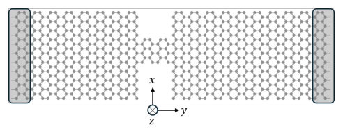
<figcaption class="paper-figure-caption"><b>Fig 1.</b> FIG. 1. Device geometry of the graphene slit junction. An armchair graphene nanoribbon with a narrow central slit is connected to two semi-infinite metallic electrodes on the left and right. The graphene sheet lies in the xy plane, with z normal to the plane; x and y are chosen perpendicular to the armchair and zigzag boundaries, respectively.</figcaption>
</figure>
<figure class="paper-figure-card">
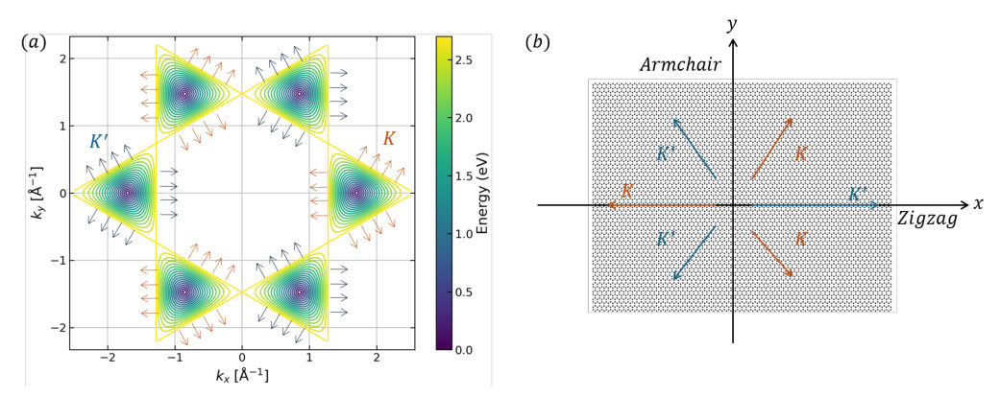
<figcaption class="paper-figure-caption"><b>Fig 2.</b> FIG. 2. Trigonal warping in monolayer graphene. (a) Isoenergy contours from E = 0 to E = 2.7 eV in the first Brillouin zone. The group velocities of the K and K′ valleys are represented by orange and blue arrows, respectively. (b) Anisotropic group-velocity directions in monolayer graphene at the K and K′ points.</figcaption>
</figure>
<figure class="paper-figure-card">
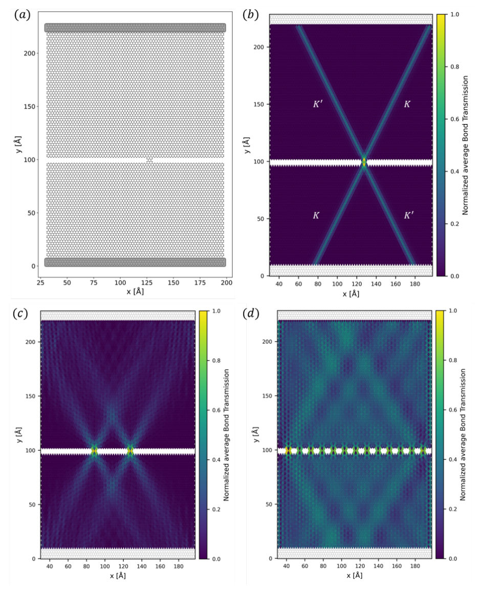
<figcaption class="paper-figure-caption"><b>Fig 3.</b> FIG. 3. Valley-polarized jets, interference, and diffraction in graphene slit junctions. (a) Geometry of the simulated device consisting of an armchair graphene nanoribbon with a small slit in the center; the electrodes are shown in grey. (b) Bond- transmission map at E = 2.7 eV, where trigonal warping is maximal. (c) Bond-transmission map at E = 2 eV for a double-slit geometry. (d) Bond-transmission map at E = 1 eV for a multiple-slit geometry, yielding a diffraction-grating-like pattern.</figcaption>
</figure>
<figure class="paper-figure-card">
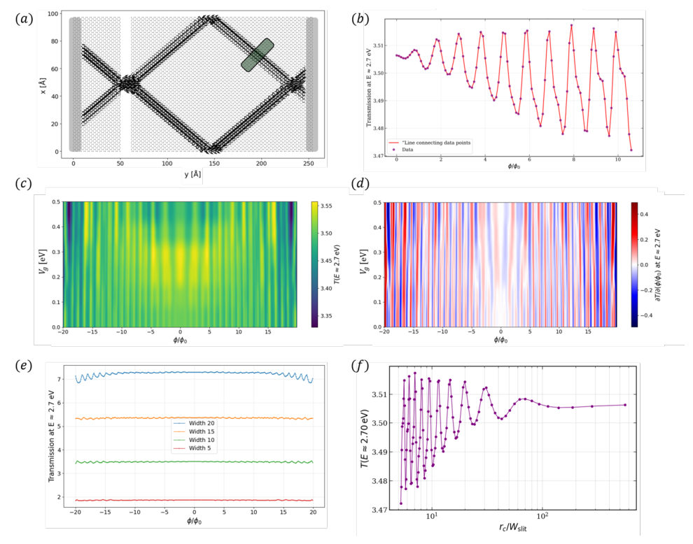
<figcaption class="paper-figure-caption"><b>Fig 4.</b> FIG. 4. Flux- and gate-controlled Aharonov–Bohm interference between valley-polarized electron jets. (a) Vector-transmission map at E = 2.7 eV for a slit width Wslit = 10 Å. The two jets leave the slit at an angle of 60◦, reflect from opposite device boundaries, and recombine at the drain. The grey regions denote the electrodes, and the green region on the upper arm denotes the area to which the phase-shifting onsite potential Vg is applied. (b) Transmission at E = 2.7 eV as a function of normalized magnetic flux Φ/Φ0. (c) Transmission at E = 2.7 eV as a joint function of Φ/Φ0 and Vg. (d) Flux derivative ∂T/∂(Φ/Φ0) of the map in (c), which highlights the interference fringes. (e)...</figcaption>
</figure>
<figure class="paper-figure-card">
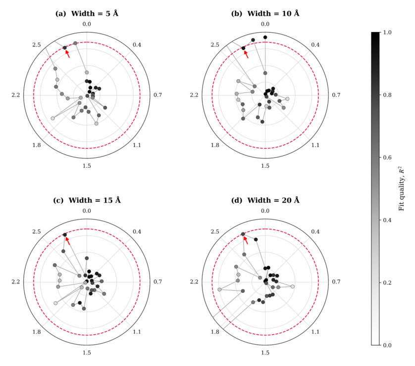
<figcaption class="paper-figure-caption"><b>Fig 5.</b> FIG. 5. Extracted AB oscillation frequency and fit quality as functions of energy given in eV. The angular coordinate represents the electron energy in eV, and the radial coordinate represents the fitted normalized frequency f. The grayscale encodes R2, ranging from white (R2 = 0) to black (R2 = 1). The red dashed circle marks the h/e expectation f = 1, while short red arrows identify the sampled points nearest E = 2.7 eV. Results are shown for slit widths (a) Wslit = 5 Å, (b) 10 Å, (c) 15 Å, and (d) 20 Å.</figcaption>
</figure>
</div>

<p><strong>Summary.</strong> This paper analyzes graphene slit junctions as a versatile quantum device capable of controlling electron beams, observing coherent quantum interference, and achieving spin filtering. By combining tight-binding methods with NEGF and Hubbard models, the authors demonstrate that the geometry allows for the simultaneous realization of these complex quantum phenomena. This suggests the slit junction is a promising platform for next-generation quantum electronic devices.</p>
<p><strong>Why it may be interesting.</strong> The work bridges concepts from quantum optics (beam formation, interference) with condensed matter physics (graphene, spin filtering, correlated electron models), making it highly relevant for open quantum systems research.</p>
<details>
<summary>Detailed structure</summary>
<p><strong>Main problem.</strong> The study investigates the combination of directional electron-beam formation, coherent interference, and symmetry-controlled spin filtering within a single, compact graphene slit junction geometry.</p>
<p><strong>Main result.</strong> The slit junction is proposed as a novel platform that simultaneously enables valley-dependent beam formation, Aharonov-Bohm interference, and spin filtering through symmetry breaking.</p>
<p><strong>Method.</strong> The research employs atomistic tight-binding calculations combined with the non-equilibrium Green's function (NEGF) formalism, supplemented by mean-field Hubbard calculations for spin physics.</p>
<p><strong>Model / system.</strong> The system is a graphene slit junction, modeled using tight-binding Hamiltonians that incorporate magnetic flux via the Peierls substitution and electron-electron interactions via the Hubbard model.</p>
<p><strong>Key observables.</strong> Magnetic-flux-dependent oscillations (Aharonov-Bohm effect), spin-polarized transmission, and valley-resolved electron current maps.</p>
<p><strong>Important parameters / regimes.</strong> Electron energy (e.g., E~2.7eV, E = 50meV), magnetic flux ($\Phi/\Phi_0$), and electrostatic gate potentials ($V_g$).</p>
<p><strong>Assumptions / limitations.</strong> The monolayer calculations are mechanism-level studies, and the model assumes zero onsite energy in the pristine device state.</p>
<p><strong>Figures summary.</strong> Figures illustrate the device geometry, show trigonal warping leading to directional jets, demonstrate AB oscillations controlled by flux and gate voltage, and present valley-resolved current maps for bilayer graphene.</p>
<p><strong>Paper structure.</strong> The paper progresses from establishing the geometry and basic transport (NEGF/tight-binding) to demonstrating quantum phenomena like AB interference and spin filtering using Hubbard models, and finally extending the analysis to bilayer graphene using continuum models.</p>
</details>
<details>
<summary>Abstract</summary>
<p>A graphene slit junction is investigated as a compact geometry for directional electron-beam formation, coherent interference, and symmetry-controlled spin filtering. Atomistic tight-binding calculations combined with the nonequilibrium Green's function formalism show that trigonal warping in monolayer graphene produces strongly directional electron beams near E~2.7eV. Boundary reflections redirect these beams toward a common drain, where the transmission exhibits magnetic flux-dependent oscillations consistent with an h/e Aharonov-Bohm period, whose modulation is characterized by Fourier analysis and harmonic fitting. A local electrostatic gate provides additional control of the interference phase. In separate self-consistent mean-field Hubbard calculations, the pristine antiferromagnetic ground state is shown to have spin-degenerate transmission, whereas structural or electrostatic breaking of the left-right symmetry enables spin filtering. Complementary valley-resolved calculations using a four-band continuum model demonstrate analogous beam formation in bilayer graphene at E = 50meV. The results identify the slit junction as a common geometry for electron-optical and spin-dependent transport and motivate further investigation of low-energy bilayer implementations.</p>
</details>
<p><sub><a href="#top">↑ back to top</a></sub></p>

<p><a id="paper-2610.00774"></a></p>
<h3 id="discrete-pt-symmetric-solitons-on-branched-lattices-vertex-states-stability-and-vortices"><a href="http://arxiv.org/abs/2610.00774v1">Discrete PT-symmetric solitons on branched lattices: Vertex states, stability, and vortices</a></h3>
<p><strong>Authors:</strong> M. Akramov, A. Fayzullaev, O. Tojakhmadova, T. Akhmadjanov<br>
<strong>Type:</strong> theory · <strong>Category:</strong> other · <strong>PDF:</strong> <a href="https://arxiv.org/pdf/2610.00774v1">https://arxiv.org/pdf/2610.00774v1</a><br>
<strong>Analysis basis:</strong> full PDF text, analyzed in chunks
<strong>Topic relevance:</strong> <code>driven-dissipative phase transition</code> <strong>3/5</strong> · <code>non-equilibrium universality</code> <strong>2/5</strong> · <code>Keldysh / 2PI / non-Gaussian methods</code> <strong>1/5</strong> · <code>analog quantum simulation</code> <strong>1/5</strong> · <code>correlated / nonlocal dissipation</code> <strong>1/5</strong> · <code>methods for driven-dissipative</code> <strong>1/5</strong></p>
<div class="figure-strip-hint">↔ Scroll figures horizontally</div>
<div class="paper-figures-scroll">
<figure class="paper-figure-card">
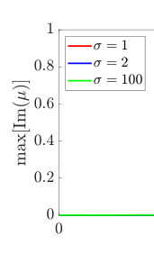
<figcaption class="paper-figure-caption"><b>Fig 1.</b> Figure 1: Maximal imaginary part of the eigenvalue µ of the Hamiltonian H in (12) versus γ0, for three values of the localization parameter σ, other parameters are chosen as κ0 = 1, κ1 = 0.6.</figcaption>
</figure>
<figure class="paper-figure-card">
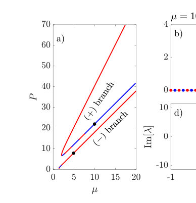
<figcaption class="paper-figure-caption"><b>Fig 2.</b> Figure 2: Numerical continuation of discrete PT -symmetric solitons bifurcating from the anticontinuum limit for the parameters κ0 = 1, κ1 = 0.4, γ0 = 0.1, σ = 2.5, g = 1. a) total power P = P n(|un|2 + |vn|2) versus µ for the two soliton branches, blue for the stable and red for the unstable solitons; black dots mark the representative points examined in the middle and right columns. b) and c) soliton amplitude profiles |ωn|2, with red and blue dots denoting the gain and loss sites, respectively, and d) and e) the corresponding linear stability spectrum Im[λ] versus Re[λ].</figcaption>
</figure>
<figure class="paper-figure-card">
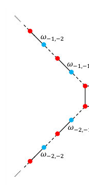
<figcaption class="paper-figure-caption"><b>Fig 3.</b> Figure 3: The star graph with four discrete edges. The central quadrimer denotes the vertex block Ω0; red and blue dots mark the gain and loss sites, respectively, on each of the four semi-infinite edges.</figcaption>
</figure>
<figure class="paper-figure-card">
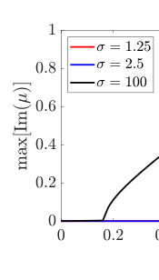
<figcaption class="paper-figure-caption"><b>Fig 4.</b> Figure 4: Maximal imaginary part of the eigenvalue µ of the linear vertex operator H in Eq. (25) versus γ0, for three values of the localization σ. Other parameters are chosen as follows: κ0 = 1, κ1 = 1.2. For each σ, max[Im(µ)] vanishes below a critical γ0, marking the onset of PT -symmetry breaking. This threshold increases as the gain-loss profile becomes more localized (smaller σ), consistent with the chain result of Fig. 1.</figcaption>
</figure>
<figure class="paper-figure-card">
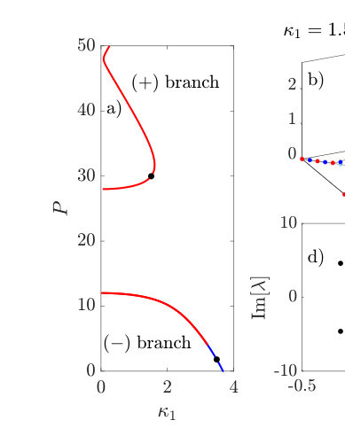
<figcaption class="paper-figure-caption"><b>Fig 5.</b> Figure 5: Continuation of the single-vertex solitons to κ1 &gt; 0. (a) Power P versus κ1 for the (+) and (−) branches, for κ0 = 1, µ = 5, γ0 = 0.1, σ = 10. Blue segments denote stable and red segments unstable solutions. Black dots mark the representative points examined in panels (b)–(e). (b),(c) Soliton amplitude profiles at κ1 = 1.5 for the (+) branch and κ1 = 3.5 for the (−) branch, respectively, with red dots corresponding to |u±j,n| and blue dots to |v±j,n|. (d),(e) Corresponding linear stability spectra λ in the complex plane for the (+) and (−) branches, respectively.</figcaption>
</figure>
</div>

<p><strong>Summary.</strong> This paper analyzes discrete nonlinear Schrödinger equations on a branched star graph under $\mathcal{PT}$-symmetry, revealing that the branching geometry supports a unique, stable vortex soliton. This vortex state possesses a fixed topological charge and exhibits stability regions inaccessible to standard linear or nonlinear soliton solutions on simple chains. The findings suggest new avenues for designing stable waveguiding structures in complex quantum networks.</p>
<p><strong>Why it may be interesting.</strong> This work is highly relevant to quantum optics and open quantum systems as it explores how complex network topologies (branching) fundamentally alter the existence and stability of nonlinear localized excitations (solitons) under non-Hermitian (PT-symmetric) conditions.</p>
<details>
<summary>Detailed structure</summary>
<p><strong>Main problem.</strong> The study investigates localized states (solitons) in Parity-Time ($\mathcal{PT}$)-symmetric systems when the underlying lattice structure is branched, moving beyond simple one-dimensional chains.</p>
<p><strong>Main result.</strong> The authors identify a novel, stable vortex state characterized by a fixed topological charge and a non-zero vertex current, which exists in stability windows unavailable in conventional linear or nonlinear branches.</p>
<p><strong>Method.</strong> The research employs analytical continuation from the anticontinuum limit, combined with linear stability analysis using perturbation theory to determine the stability of the found solutions.</p>
<p><strong>Model / system.</strong> The system is modeled by the discrete nonlinear Schrödinger equation (NLDS) applied to a branched lattice, specifically a four-edge star graph, incorporating localized Gaussian gain and loss terms to enforce $\mathcal{PT}$-symmetry.</p>
<p><strong>Key observables.</strong> Topological charge (winding number $\ell$), vertex current ($    ext{J}$), and the complex growth rate ($\lambda$) from the stability analysis.</p>
<p><strong>Important parameters / regimes.</strong> Gain/loss coefficients ($\gamma_0$), coupling coefficients ($\kappa_0, \kappa_1$), and the spectral eigenvalue ($\mu$).</p>
<p><strong>Assumptions / limitations.</strong> The analysis assumes the validity of $\mathcal{PT}$-symmetry reduction for continuation and relies on the invertibility of the Jacobian matrix for continuation methods.</p>
<p><strong>Figures summary.</strong> Figures illustrate the shift of the $\mathcal{PT}$ phase transition threshold, the numerical continuation of soliton branches (power/amplitude profiles), and the stability regions in parameter space ($\kappa_1$ vs. $\gamma_0$).</p>
<p><strong>Paper structure.</strong> The paper progresses by first establishing the general NLDS framework on the branched lattice, then using continuation methods to find soliton solutions, and finally characterizing the unique vortex branch via topological invariants and stability analysis.</p>
</details>
<details>
<summary>Abstract</summary>
<p>Branching fundamentally modifies nonlinear localization by introducing vertex degrees of freedom absent in one-dimensional lattices. We investigate localized states in a PT-symmetric four-edge star graph described by the discrete nonlinear Schrödinger equation. We identify a discrete vortex state with a fixed topological charge, supported by the branching geometry. Constructed by continuation from the anticontinuum limit, the vortex evolves into a current-carrying state in the presence of balanced gain and loss and exhibits stability windows absent for the conventional branches. A possible electric-circuit realization of the proposed model is discussed.</p>
</details>
<p><sub><a href="#top">↑ back to top</a></sub></p>

<p><a id="paper-2610.01755"></a></p>
<h3 id="structured-light-control-of-goniopolar-thermoelectricity-in-nasntexorpdfstringmath2154math2astexorpdfstringmath2155math2"><a href="http://arxiv.org/abs/2610.01755v1">Structured-Light Control of Goniopolar Thermoelectricity in NaSn\texorpdfstring{$_2$}{2}As\texorpdfstring{$_2$}{2}</a></h3>
<p><strong>Authors:</strong> Atoumane Ndiaye, Edwin Fohtung<br>
<strong>Type:</strong> theory · <strong>Category:</strong> other · <strong>PDF:</strong> <a href="https://arxiv.org/pdf/2610.01755v1">https://arxiv.org/pdf/2610.01755v1</a><br>
<strong>Analysis basis:</strong> full PDF text, analyzed in chunks
<strong>Topic relevance:</strong> <code>interference shaping light</code> <strong>3/5</strong> · <code>analog quantum simulation</code> <strong>2/5</strong> · <code>quantum measurements</code> <strong>2/5</strong> · <code>Keldysh / 2PI / non-Gaussian methods</code> <strong>1/5</strong> · <code>methods for driven-dissipative</code> <strong>1/5</strong></p>
<div class="figure-strip-hint">↔ Scroll figures horizontally</div>
<div class="paper-figures-scroll">
<figure class="paper-figure-card">
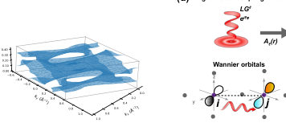
<figcaption class="paper-figure-caption"><b>Fig 1.</b> FIG. 1. Electronic origin and structured-light control of goniopolar thermoelectric transport in NaSn2As2. (a) Dark-state goniopolar geometry, with SabSc &lt; 0. (b) LG structured field displaced relative to the crystal. (c) Anisotropic Fermi surface underlying direction-dependent</figcaption>
</figure>
<figure class="paper-figure-card">
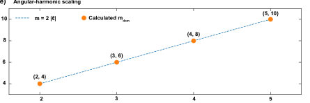
<figcaption class="paper-figure-caption"><b>Fig 2.</b> FIG. 2. Spatial imprint and angular scaling of the OAM-induced goniopolar response in NaSn2As2. (a,b) Spatial maps of the goniopolar-window width WGP as a func- tion of the LG-field displacement (x0 −xtarget, y0 −ytarget) for (a) ℓ= 3 and (b) ℓ= 5. The response forms an an- nular pattern whose characteristic radius closely follows the radial maximum of the p = 0 LG envelope, rmax = w0 p</figcaption>
</figure>
<figure class="paper-figure-card">
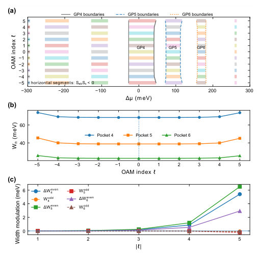
<figcaption class="paper-figure-caption"><b>Fig 3.</b> FIG. 3. OAM-dependent modulation of goniopolar windows. (a) Goniopolar (GP) intervals at T = 300 K as a function of chemical-potential shift ∆µ and OAM index ℓ. Horizontal segments identify regions satisfying SabSc &lt; 0; the boundaries of representative pockets GP4, GP5, and GP6 are highlighted. All three representative pockets persist through- out the calculated range ℓ= −5, . . . , +5, while their bound- aries shift with ℓ. (b) Corresponding widths Wn = µ+ n −µ− n of GP4, GP5, and GP6. The widths increase most strongly at large |ℓ|, with GP5 exhibiting an approximately 17% en- hancement at |ℓ| = 5 relative to the zero-OAM structured- field reference. (c) Even and odd components of the...</figcaption>
</figure>
<figure class="paper-figure-card">
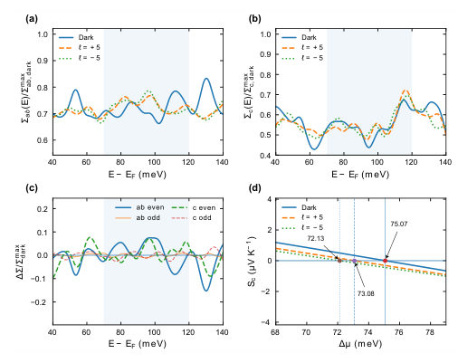
<figcaption class="paper-figure-caption"><b>Fig 4.</b> FIG. 4. Microscopic transport mechanism underlying structured-light control of goniopolarity. (a,b) Energy- resolved transport distributions for the dark state and ℓ= ±5, showing (a) the in-plane component Σab(E) and (b) the cross- plane component Σc(E), normalized by the corresponding maximum dark-state values. The shaded energy interval high- lights the region relevant to the analyzed goniopolar bound- ary. (c) Structured-field-induced changes in the transport dis- tributions, decomposed into even- and odd-in-ℓcontributions for the ab and c directions. The even component provides the dominant common response to |ℓ|, while the smaller odd component measures the difference between opposite...</figcaption>
</figure>
</div>

<p><strong>Summary.</strong> This work shows that applying structured light, specifically a Laguerre-Gaussian potential, can act as a programmable external control parameter for the thermoelectric properties of NaSn2As2. By tuning the orbital angular momentum (OAM) index $|\ell|$, researchers can systematically reconstruct and enhance the material's goniopolar phase space. This establishes a new paradigm for controlling electronic order using structured electromagnetic fields.</p>
<p><strong>Why it may be interesting.</strong> The use of structured light to engineer electronic properties via orbital angular momentum coupling provides a direct analogy to controlling quantum states using structured electromagnetic fields, relevant to quantum optics and open quantum systems.</p>
<details>
<summary>Detailed structure</summary>
<p><strong>Main problem.</strong> To demonstrate that a structured Laguerre-Gaussian vector potential can programmatically control the goniopolar phase space of the material NaSn2As2.</p>
<p><strong>Main result.</strong> The structured light reconstructs the goniopolar phase space, enhancing specific thermoelectric windows and shifting the boundaries that define the goniopolar state.</p>
<p><strong>Method.</strong> First-principles-derived Wannier transport calculations incorporating a bond-dependent Peierls coupling modulated by the structured light potential.</p>
<p><strong>Model / system.</strong> The system is NaSn2As2, modeled using a Wannier Hamiltonian modified by a spatially varying Laguerre-Gaussian (LG) vector potential. This introduces a Peierls phase that modifies the hopping terms.</p>
<p><strong>Key observables.</strong> Goniopolar window width (WGP), directional Seebeck coefficients ($S_{ab}, S_c$), and the dominant angular harmonic ($m_{	ext{dom}}$).</p>
<p><strong>Important parameters / regimes.</strong> The LG field winding index $|\ell|$ and the beam center displacement $\mathbf{r}_0$ act as programmable control coordinates.</p>
<p><strong>Assumptions / limitations.</strong> The analysis uses the constant-relaxation-time approximation for transport, and the coupling is implemented via a bond-dependent Peierls phase.</p>
<p><strong>Figures summary.</strong> Figures illustrate the electronic origin of the coupling, spatial maps showing the reconstruction of goniopolar windows following $r_{	ext{max}} \propto 
ho/|\ell|$, and Fourier decompositions confirming $m_{	ext{dom}} = 2|\ell|$.</p>
<p><strong>Paper structure.</strong> The paper establishes the theoretical framework using the LG potential to modify the Hamiltonian, calculates the resulting spatial and angular modulations of the goniopolar state, and finally analyzes the shift in the directional Seebeck-zero boundaries.</p>
</details>
<details>
<summary>Abstract</summary>
<p>Goniopolar metals exhibit opposite thermoelectric polarities along different crystallographic directions, enabling zero-field transverse thermoelectricity but offering few means for external control. Here we show that a spatially structured Laguerre--Gaussian vector potential can programmably reconstruct the goniopolar phase space of NaSn$_2$As$_2$. First-principles-derived Wannier transport with bond-dependent Peierls coupling reveals two OAM-dependent spatial scaling laws: the radial response follows the Laguerre--Gaussian radius $r_{\max}\propto\sqrt{|\ell|}$, while calculations for $|\ell|=2$--5 yield a dominant angular harmonic $m_{\mathrm{dom}}=2|\ell|$, encoding the optical winding in a frequency-doubled thermoelectric response. Increasing $|\ell|$ simultaneously reconstructs pre-existing goniopolar windows, enhancing a representative window by approximately 17\% at $|\ell|=5$. By contrast, reversing $\ell$ at fixed polarization produces only a small correction that approximately interchanges upon polarization reversal. Energy-resolved transport reveals that the structured field redistributes in-plane and cross-plane electronic velocities, shifting the directional Seebeck-zero boundaries that define the goniopolar state. These results establish vortex position and OAM magnitude as programmable control coordinates for goniopolar thermoelectricity.</p>
</details>
<p><sub><a href="#top">↑ back to top</a></sub></p>

<p><a id="paper-2610.00496"></a></p>
<h3 id="orbital-angular-momentum-in-crystalline-solids-non-equilibrium-theory"><a href="http://arxiv.org/abs/2610.00496v1">Orbital angular momentum in crystalline solids: non-equilibrium theory</a></h3>
<p><strong>Authors:</strong> Sangeeta Sharma, Peter Elliott, Samuel Shallcross<br>
<strong>Type:</strong> theory · <strong>Category:</strong> other · <strong>PDF:</strong> <a href="https://arxiv.org/pdf/2610.00496v1">https://arxiv.org/pdf/2610.00496v1</a><br>
<strong>Analysis basis:</strong> full PDF text, analyzed in chunks
<strong>Topic relevance:</strong> <code>interference shaping light</code> <strong>3/5</strong> · <code>Keldysh / 2PI / non-Gaussian methods</code> <strong>2/5</strong> · <code>methods for driven-dissipative</code> <strong>1/5</strong></p>
<div class="figure-strip-hint">↔ Scroll figures horizontally</div>
<div class="paper-figures-scroll">
<figure class="paper-figure-card">
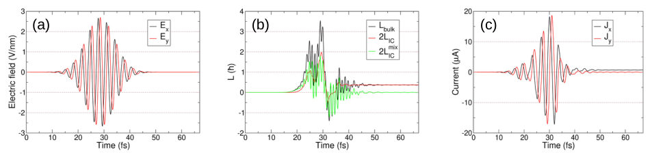
<figcaption class="paper-figure-caption"><b>Fig 1.</b> Fig. 1 Ultrafast generation of giant transient orbital angular momentum in gapped graphene: A circularly polarized driving field, (a), generates a dynamically changing bulk orbital angular momentum in gapped graphene, (b), where we show both the bulk orbital angular momentum (Lbulk) as well as its two components, the dynamical “itinerant circulation” (IC) (2LIC) and the “mixed” intra- and inter-band IC (2Lmix IC ). During the pulse-driven excitation a significant transient orbital angular momentum of nearly 4ℏis generated, corresponding in magnitude to an orbital magnetic moment of 4µB, which, post-pulse, drops to nearly zero (i.e. back to the ground state orbital angular momentum which is...</figcaption>
</figure>
<figure class="paper-figure-card">
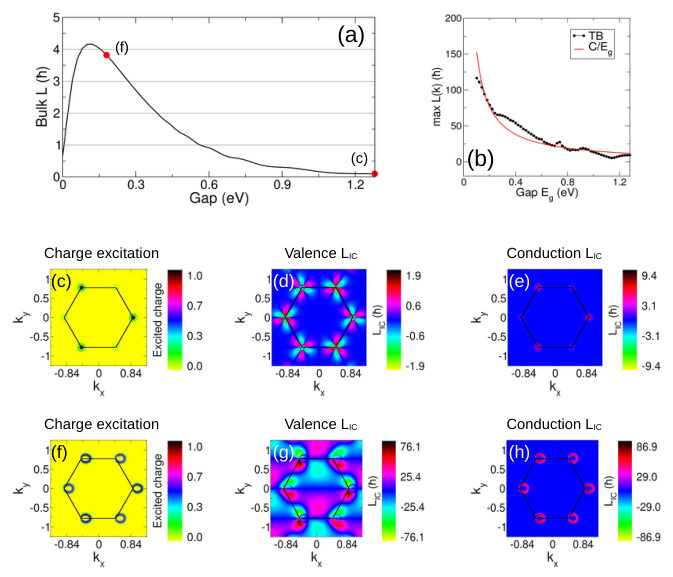
<figcaption class="paper-figure-caption"><b>Fig 2.</b> Fig. 2 Gap control over light-created post-pulse orbital angular momentum: Laser excitation generates a quasi- stationary post-pulse orbital angular momentum (OAM) that is strongly gap dependent, panel (a). Examination of the momentum resolved OAM texture reveals that the maximum post-pulse itinerant orbital angular momentum LIC scales approx- imately as C/Eg, a fact that has its origin in the pseudospin texture of the gapped Dirac point, as described in the text. (c-e) Momentum-resolved excited charge (c), and the corresponding valence- and conduction-band itinerant orbital angular momen- tum LIC (d,e), for the large gap case marked (c) in figure panel (a). Note that while the conduction...</figcaption>
</figure>
<figure class="paper-figure-card">
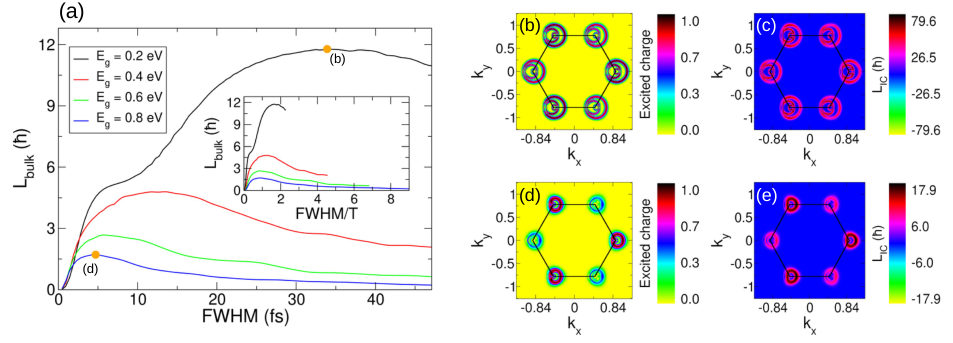
<figcaption class="paper-figure-caption"><b>Fig 3.</b> Fig. 3 Control of light created orbital angular momentum via laser pulse parameters. (a) Post-pulse bulk orbital angular momentum in gapped graphene Lres bulk as a function of pulse full width at half maximum (FWHM) for four representative gaps: Eg = 0.2, 0.4, 0.6, and 0.8 eV. In the long time multi-cycle limit the light induced OAM substantially decreases. Maximum OAM creation is associated with the few cycle limit, as is made clear by the inset plot, in which the same data is presented against FWHM measured in optical cycles, FWHM/T. As the pulse fluence is held fixed over the FWHM scan the few cycle limit implies larger vector potential amplitude, allowing intense valley OAM to be...</figcaption>
</figure>
</div>

<p><strong>Summary.</strong> This work establishes a unified operator theory for Orbital Angular Momentum (OAM) in crystalline solids, applicable across both steady-state and ultrafast non-equilibrium regimes. By decomposing OAM into local and itinerant components, the authors predict that external driving fields, such as intense lasers, can generate novel, quasi-stationary OAM signatures linked to momentum-space phase structures. This opens new avenues for controlling light-matter interactions using topological properties of band structures.</p>
<p><strong>Why it may be interesting.</strong> The explicit connection drawn between light-induced momentum-space phase textures and measurable, quasi-stationary OAM provides a concrete, controllable mechanism for manipulating angular momentum in solid-state systems, relevant to quantum optics and light-matter interaction.</p>
<details>
<summary>Detailed structure</summary>
<p><strong>Main problem.</strong> To develop a general operator theory for Orbital Angular Momentum (OAM) in periodic solids that remains valid for both equilibrium and non-equilibrium states.</p>
<p><strong>Main result.</strong> The theory successfully decomposes OAM into local and itinerant circulation sectors, revealing new non-equilibrium contributions from momentum-space phase textures when driven by light.</p>
<p><strong>Method.</strong> The authors employ the crystal momentum representation (CMR) of Adams and Blount to construct the OAM operator, decomposing it into covariant derivative and dipole matrix terms.</p>
<p><strong>Model / system.</strong> The theory is applied to crystalline solids, with specific calculations performed for gapped graphene. The formalism relies on band structure analysis and the decomposition of position and velocity operators.</p>
<p><strong>Key observables.</strong> Orbital Angular Momentum (OAM), Local Circulation (LC) and Itinerant Circulation (IC) sectors, Berry curvature, and quasi-stationary light-induced OAM.</p>
<p><strong>Important parameters / regimes.</strong> Equilibrium vs. non-equilibrium driving conditions, laser-written momentum-space textures, and band manifold phase texture.</p>
<p><strong>Assumptions / limitations.</strong> The use of the crystal momentum representation (CMR) is crucial to circumvent issues with the position operator in the standard Bloch representation.</p>
<p><strong>Paper structure.</strong> The paper builds the OAM operator using CMR, separates it into LC and IC sectors, derives the equilibrium limit matching existing theory, and then extends the framework to analyze non-equilibrium dynamics using phase texture analysis.</p>
</details>
<details>
<summary>Abstract</summary>
<p>We develop a general operator theory of orbital angular momentum (OAM) in periodic solids that applies equally to equilibrium and coherently driven states. Employing the crystal momentum representation of Adams and Blount, we construct a periodic-solid OAM operator exactly corresponding to the symmetrized $\hat{\mathbf r}\times\hat{\mathbf v}$ observable, and show that it separates into local circulation (LC) and itinerant circulation (IC) sectors that are Hermitian and $U(1)$, and more generally $U(N)$, gauge covariant. In equilibrium, the LC and IC sectors reduce to the established modern theory of orbital magnetism; out of equilibrium, the same operator structure exposes new contributions generated by laser-written momentum-space textures and interband coherence. Applied to gapped graphene, we uncover a rich phenomenology of ultrafast non-equilibrium orbital angular momentum, including a quasi-stationary light-induced OAM. This latter finding, underpinned by a close connection between band-manifold phase texture and nonequilibrium OAM, points towards new possibilities for light control over OAM in solids as well as a potentially rich role for topological band structures in designed OAM materials.</p>
</details>
<p><sub><a href="#top">↑ back to top</a></sub></p>

<p><a id="paper-2610.00956"></a></p>
<h3 id="hydrogen-plasma-assisted-atomic-layer-epitaxy-of-superconducting-titanium-nitride"><a href="http://arxiv.org/abs/2610.00956v1">Hydrogen plasma-assisted atomic layer epitaxy of superconducting titanium nitride</a></h3>
<p><strong>Authors:</strong> Yi-Hsun Chen, Yin-Chun Huang, Zachary Degnan, David Sommers, Kaijian Xing, Manjith Bose, Eduardo Solano, David Cortie, Michael Fuhrer, Julian A. Steele, Peter Jacobson, Miin-Jang Chen, Arkady Fedorov<br>
<strong>Type:</strong> experiment · <strong>Category:</strong> other · <strong>PDF:</strong> <a href="https://arxiv.org/pdf/2610.00956v1">https://arxiv.org/pdf/2610.00956v1</a><br>
<strong>Analysis basis:</strong> full PDF text, analyzed in chunks
<strong>Topic relevance:</strong> <code>QC/QI experiment</code> <strong>3/5</strong> · <code>analog quantum simulation</code> <strong>1/5</strong></p>
<div class="figure-strip-hint">↔ Scroll figures horizontally</div>
<div class="paper-figures-scroll">
<figure class="paper-figure-card">
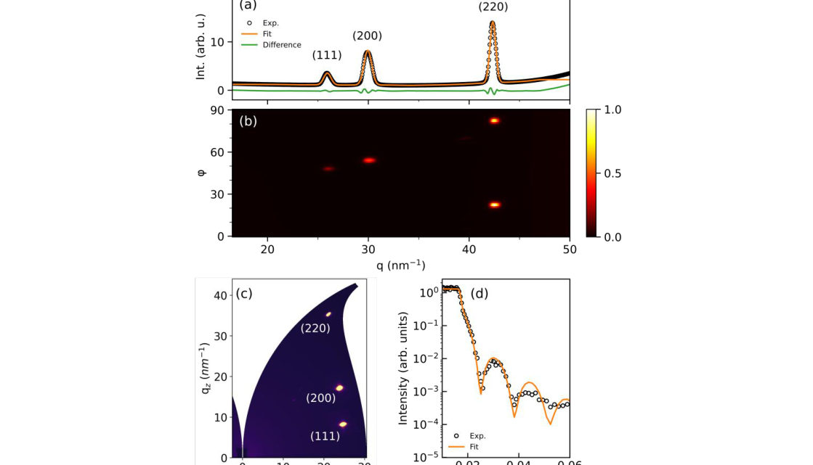
<figcaption class="paper-figure-caption"><b>Fig 1.</b> Figure 1. Structural characteristics of TiN thin films. (a) 1D profile as a function of total reciprocal lattice vector, q, integrated over GIWAXS 2D images. Bragg peaks were observed at q = 25.9, 29.9, 42.3 nm−1. The experimental data are fit using the Le Bail method to obtain the unit cell symmetry and lattice parameters. (b) Evolution of 1D integrated profiles as a function of the sample rotation angle, φ, recorded through a φ rotation around the film normal. Inset: a schematic of φ angle relative to the sample. (c) 2D GIWAXS pattern obtained at an incidence angle of 0.28°. The pattern is generated from multiple 2D images at different φ. (d) Neutron reflectivity as a function of q fitted...</figcaption>
</figure>
<figure class="paper-figure-card">
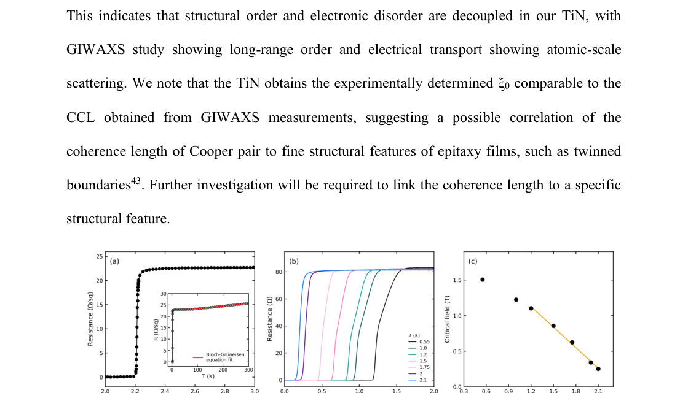
<figcaption class="paper-figure-caption"><b>Fig 2.</b> Figure 2. Superconducting properties of TiN films. (a) Temperature dependence of sheet resistance Rsq of a TiN Hall bar sample. We obtained a critical temperature Tc of superconductivity at 2.2 K. Inset: temperature-dependent Rsq. We obtained n = 4.8 and an estimated Debye temperature θD ~ 470 K using Bloch-Grüneisen formula. (b,c) Magnetotransport properties of evolution of resistance as a function of out-of-plane magnetic field with temperature ranging from 0.55 to 2.1 K (b), and extracted upper critical field Hc2 as a function of temperature (c).</figcaption>
</figure>
<figure class="paper-figure-card">
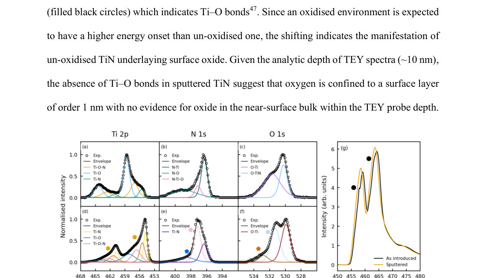
<figcaption class="paper-figure-caption"><b>Fig 3.</b> Figure 3. Compositional analysis of HPA-ALD grown TiN. (a–f) High-resolution XPS spectra of Ti 2p, N 1s, and O 1s core levels for the as-introduced (a–c) and sputtered sample (d–f). Black circles and solid lines represent the experimental data and the fitted envelopes respectively. All the spectra were obtained with a fixed kinetic energy of 70 eV. The fit</figcaption>
</figure>
</div>

<p><strong>Summary.</strong> This work establishes hydrogen plasma-assisted Atomic Layer Deposition (HPA-ALD) as a robust technique for growing high-quality, superconducting titanium nitride (TiN) thin films. By controlling surface chemistry during deposition, the researchers achieved films with excellent structural order and superconducting properties at 2.2 K. This demonstrates that ALD can be successfully scaled to create materials essential for advanced cryogenic quantum technologies.</p>
<p><strong>Why it may be interesting.</strong> While the focus is on materials science, the development of highly controlled, superconducting thin films is crucial for building superconducting qubits and quantum circuits, making the material platform relevant to quantum information.</p>
<details>
<summary>Detailed structure</summary>
<p><strong>Main problem.</strong> The goal was to develop a reliable method to epitaxially grow structurally ordered, superconducting titanium nitride (TiN) thin films suitable for use in cryogenic quantum technologies.</p>
<p><strong>Main result.</strong> Hydrogen plasma-assisted Atomic Layer Deposition (HPA-ALD) successfully produced superconducting TiN films exhibiting semi-coherent epitaxy with minimal structural or chemical disorder, achieving a superconducting transition at 2.2 K.</p>
<p><strong>Method.</strong> The study employed HPA-ALD, followed by extensive characterization using Synchrotron X-ray Scattering (GIWAXS), Neutron Reflectometry, and superconducting transport measurements.</p>
<p><strong>Model / system.</strong> The physical system is the TiN thin film grown on c-plane sapphire. The process involves using a hydrogen plasma step during ALD to control surface chemistry and suppress impurities, aiming for high structural quality.</p>
<p><strong>Key observables.</strong> Superconducting transition temperature ($T_c = 2.2 	ext{ K}$), kinetic inductance ($15 	ext{ pH/sq}$), superconducting coherence length ($\xi_0 = 14.6 	ext{ nm}$), and structural coherence derived from GIWAXS.</p>
<p><strong>Important parameters / regimes.</strong> The method relies on controlling precursor impurities and achieving structural order at cryogenic temperatures, with coherence lengths comparable to the crystal structure.</p>
<p><strong>Assumptions / limitations.</strong> The superconducting coherence length is assumed to be comparable to the crystal coherence length, and the method is presented as an extension of ALD control to superconducting materials.</p>
<p><strong>Figures summary.</strong> Figures detail structural characteristics via 1D/2D GIWAXS and neutron reflectivity, and superconducting properties via temperature-dependent resistance and magnetic field dependence.</p>
<p><strong>Paper structure.</strong> The paper details the HPA-ALD process, presents structural characterization (GIWAXS, neutron reflectometry) confirming order and purity, and concludes with superconducting transport measurements demonstrating device viability.</p>
</details>
<details>
<summary>Abstract</summary>
<p>Atomic layer deposition (ALD) offers precise, conformal control of thin-film growth and is a workhorse for semiconductor manufacturing, but its use in superconducting quantum circuits is constrained by the need to simultaneously control crystallinity, stoichiometry and interfacial disorder at cryogenic temperatures. Here we develop hydrogen plasma assisted ALD to epitaxially grow superconducting titanium nitride (TiN) thin films, using a hydrogen plasma step to modify the surface chemistry to suppress precursor-derived impurities during each deposition cycle. Synchrotron X-ray scattering reveals semi-coherent epitaxy of TiN on c-plane sapphire, with discrete crystallographic domains and minimal long-range structural disorder. Complementary X-ray spectroscopy and neutron reflectometry show negligible oxygen-related disorder throughout the film and no substantial hydrogen incorporation. The resulting TiN films exhibit a superconducting transition at 2.2 K, a kinetic inductance of 15 pH/sq and a superconducting coherence length of 14.6 nm, comparable to the measured crystal coherence length. These results establish hydrogen plasma assisted ALD as a route to structurally ordered superconducting TiN thin film epitaxy and demonstrate that the nanoscale control of ALD can be extended to materials suitable for cryogenic quantum technologies.</p>
</details>
<p><sub><a href="#top">↑ back to top</a></sub></p>

<p><a id="paper-2610.01423"></a></p>
<h3 id="sector-resolved-winding-selection-rules-for-structured-light-driven-dc-currents"><a href="http://arxiv.org/abs/2610.01423v1">Sector-Resolved Winding Selection Rules for Structured-Light-Driven dc Currents</a></h3>
<p><strong>Authors:</strong> Tomohiro Tamaya, Kenichi L. Ishikawa<br>
<strong>Type:</strong> theory · <strong>Category:</strong> other · <strong>PDF:</strong> <a href="https://arxiv.org/pdf/2610.01423v1">https://arxiv.org/pdf/2610.01423v1</a><br>
<strong>Analysis basis:</strong> full PDF text, analyzed in chunks
<strong>Topic relevance:</strong> <code>interference shaping light</code> <strong>3/5</strong></p>
<div class="figure-strip-hint">↔ Scroll figures horizontally</div>
<div class="paper-figures-scroll">
<figure class="paper-figure-card">
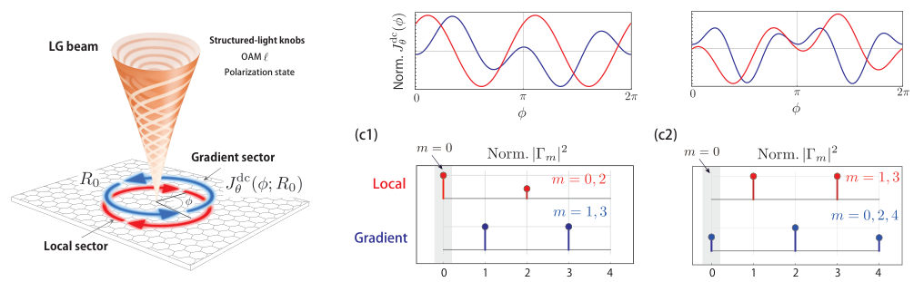
<figcaption class="paper-figure-caption"><b>Fig 1.</b> FIG. 1. Sector-resolved winding diagnostic and linear-polarization selection. (a) Schematic of the winding-spectrum diagnostic for the dc azimuthal current Jdc θ (ϕ; R0) on a graphene sheet, evaluated along an observation circle of radius R0. (b1,b2) Azimuthal dependence of Jdc θ (ϕ; R0) for linearly polarized scalar LG beams at R0 = Rmax ℓ , where Rmax ℓ is the radius of maximum LG intensity, for ℓ= 1 and ℓ= 2. For visualization in (b1,b2), the azimuthally uniform m = 0 component, i.e., the angular average of Jdc θ (ϕ; R0), has been subtracted. Red and blue curves denote local- and gradient-sector contributions, respectively. (c1,c2) Corresponding normalized winding spectra |Γm(R0)|2,...</figcaption>
</figure>
<figure class="paper-figure-card">
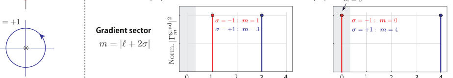
<figcaption class="paper-figure-caption"><b>Fig 2.</b> FIG. 2. Helicity-controlled branch selection for circularly polarized scalar LG beams. (a) Helicity convention and sector- dependent combinations selecting the m = 0 circulating-current branch. (b1,b2) Local-sector winding spectra and (c1,c2) gradient-sector winding spectra for ℓ= 1, 2. Red and blue sticks denote σ = −1 and σ = +1, respectively, and the gray region marks the m = 0 branch. Each panel is normalized independently to its maximum value.</figcaption>
</figure>
<figure class="paper-figure-card">
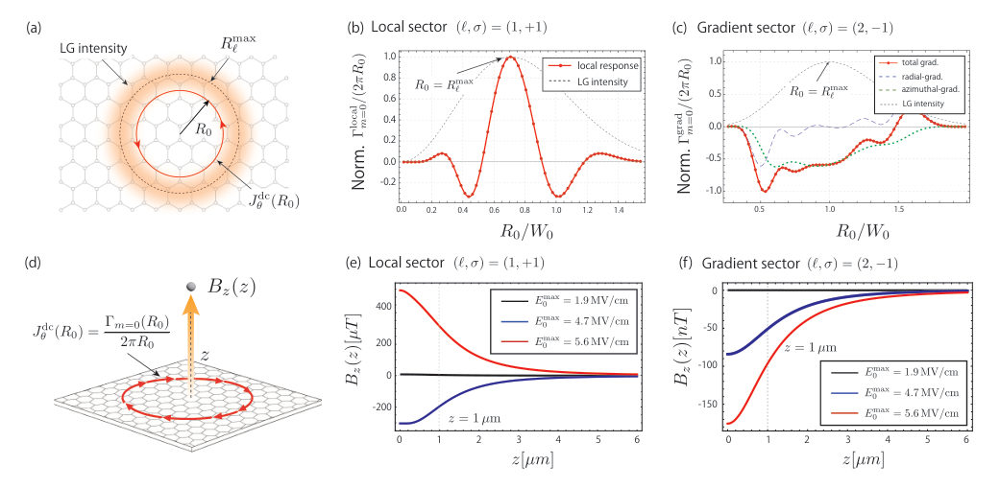
<figcaption class="paper-figure-caption"><b>Fig 3.</b> FIG. 3. Real-space profiles and magnetic readout of sector-selected m = 0 currents. (a) Schematic extraction of the radial profile of the azimuthal current Jdc θ (R0) = Γm=0(R0)/(2πR0) from the selected m = 0 component, overlaid on the radial intensity profile of the LG beam. (b,c) Radial profiles of the selected m = 0 current for the local branch (ℓ, σ) = (1, +1) and the gradient branch (ℓ, σ) = (2, −1), respectively. Dashed gray curves show the corresponding LG intensity profiles. In (c), the gradient response is decomposed into total, radial-gradient, and azimuthal-gradient contributions. (d) Schematic magnetic readout of the circulating sheet current. (e,f) Corresponding on-axis fields...</figcaption>
</figure>
</div>

<p><strong>Summary.</strong> This paper develops and verifies sector-resolved selection rules that dictate the azimuthal winding order ($m$) of dc currents generated in graphene by structured light. By decomposing the current response into local and gradient sectors, the authors show that $m$ depends systematically on the beam's polarization and orbital angular momentum ($\ell$). The resulting $m=0$ current component can be used to predict the measurable axial magnetic field $B_z(z)$ generated by the structured light interaction.</p>
<p><strong>Why it may be interesting.</strong> This work provides a detailed, quantitative framework for controlling current topology using structured light, which is highly relevant to understanding non-linear optical responses and current generation in 2D materials.</p>
<details>
<summary>Detailed structure</summary>
<p><strong>Main problem.</strong> The paper aims to establish systematic, sector-resolved selection rules governing the azimuthal winding order ($m$) of dc currents induced in graphene by structured light.</p>
<p><strong>Main result.</strong> The winding order $m$ is determined by the angular structure of the current operators (local vs. gradient sectors) and is explicitly dependent on the polarization and optical orbital angular momentum ($\ell$).</p>
<p><strong>Method.</strong> The analysis decomposes the induced dc current into local and gradient sectors, deriving selection rules by analyzing the Fourier coefficients of the azimuthal current component.</p>
<p><strong>Model / system.</strong> The system is graphene, acting as a clean two-dimensional platform driven by scalar Laguerre-Gaussian (LG) beams. The analysis uses a multipole light-matter coupling framework.</p>
<p><strong>Key observables.</strong> The dc azimuthal current component $J_{dc	heta}(\phi; R_0)$ and its winding order $m$, which is diagnosed via the spectrum $|\Gamma_m(R_0)|^2$.</p>
<p><strong>Important parameters / regimes.</strong> Optical orbital angular momentum ($\ell$), beam helicity ($\sigma$), and the separation into local and gradient current sectors.</p>
<p><strong>Assumptions / limitations.</strong> The analysis relies on the long-wavelength expansion and the separation of the current response into local and gradient sectors; the $q_{\parallel}=0$ approximation is validated as accurate.</p>
<p><strong>Figures summary.</strong> Figures illustrate the diagnostic spectra for linear and circular polarization, verifying the derived selection rules for $m$. A subsequent figure shows the reconstruction of the axial magnetic field $B_z(z)$ solely from the $m=0$ winding component.</p>
<p><strong>Paper structure.</strong> The paper first introduces the problem and decomposes the current response into local and gradient sectors. It then derives and verifies the specific selection rules for linear and circular polarization. Finally, it uses the $m=0$ component to calculate the resulting axial magnetic field $B_z(z)$ via the Biot-Savart law.</p>
</details>
<details>
<summary>Abstract</summary>
<p>Structured light can generate electronic dc currents with azimuthal winding, yet the rules governing their winding order $m$ remain unclear. Here we identify sector-resolved winding selection rules using graphene as a clean two-dimensional platform. By decomposing the current response into local and gradient sectors at the current-operator level, we show that the winding order is determined not by the optical orbital angular momentum $\ell$ alone, but by the angular structure of the corresponding current operators together with projection onto the azimuthal direction. For scalar Laguerre-Gaussian beams, linear polarization yields $m=|\ell\pm1|$ in the local sector and $m=|\ell|,|\ell\pm2|$ in the gradient sector, whereas circular polarization with helicity $σ=\pm1$ selects $m=|\ell-σ|$ in the local sector and $m=|\ell+2σ|$ in the gradient sector. Numerical time-evolution calculations verify these rules and further show that helicity can select an $m=0$ branch, producing an azimuthally uniform circulating current whose radial profile determines the axial magnetic field $B_z(z)$. Our results provide a sector-resolved organizing principle for classifying and controlling structured-light-driven dc currents with tailored winding structures.</p>
</details>
<p><sub><a href="#top">↑ back to top</a></sub></p>

<p><a id="paper-2610.01164"></a></p>
<h3 id="nutational-spin-pumping-and-dissipation"><a href="http://arxiv.org/abs/2610.01164v1">Nutational Spin Pumping and Dissipation</a></h3>
<p><strong>Authors:</strong> Hans Gløckner Giil, Arne Brataas<br>
<strong>Type:</strong> theory · <strong>Category:</strong> other · <strong>PDF:</strong> <a href="https://arxiv.org/pdf/2610.01164v1">https://arxiv.org/pdf/2610.01164v1</a><br>
<strong>Analysis basis:</strong> full PDF text, analyzed in chunks
<strong>Topic relevance:</strong> <code>Keldysh / 2PI / non-Gaussian methods</code> <strong>2/5</strong> · <code>methods for driven-dissipative</code> <strong>2/5</strong></p>
<div class="figure-strip-hint">↔ Scroll figures horizontally</div>
<div class="paper-figures-scroll">
<figure class="paper-figure-card">
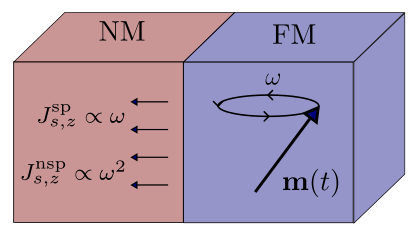
<figcaption class="paper-figure-caption"><b>Fig 1.</b> FIG. 1: The precessing magnetization pumps spin currents into the normal metal with two contributions, the conventional contribution Jsp s,z linear in the driving frequency ω and the nutational contribution Jnsp s,z quadratic in ω. Both contributions exhibit resonance peaks for right-handed driving fields at the FMR frequency, and for left-handed driving fields at the NR frequency.</figcaption>
</figure>
<figure class="paper-figure-card">
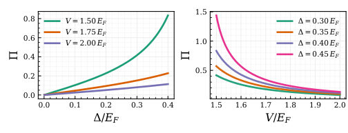
<figcaption class="paper-figure-caption"><b>Fig 2.</b> FIG. 2: The strength of the nutational damping Π as a function of (a) ∆and (b) V .</figcaption>
</figure>
</div>

<p><strong>Summary.</strong> This theoretical work extends magnetization dynamics theory to the THz regime by incorporating inertial effects into the LLG equation. It predicts a novel nutational spin pumping current that scales quadratically with the drive frequency. The findings offer a microscopic understanding of this effect, which can be detected via the inverse spin Hall effect, advancing spintronic device design.</p>
<p><strong>Why it may be interesting.</strong> The inclusion of inertial terms and the resulting frequency-squared dependence of the spin current provides a rich, non-linear extension to standard spin-torque phenomena, relevant for understanding high-frequency spintronics.</p>
<details>
<summary>Detailed structure</summary>
<p><strong>Main problem.</strong> The study addresses magnetization dynamics in the terahertz (THz) regime where standard Landau-Lifshitz-Gilbert (LLG) theory fails due to inertial effects.</p>
<p><strong>Main result.</strong> The authors predict a novel nutational spin pumping effect, generating a DC spin current that scales quadratically with the drive frequency ($\omega^2$).</p>
<p><strong>Method.</strong> The analysis combines extending the LLG equation to include inertial terms with scattering theory applied to FM/NM junctions.</p>
<p><strong>Model / system.</strong> The system involves ferromagnets (FMs) coupled to adjacent metals (NMs), modeled using an inertial extension of the LLG equation and a microscopic Hamiltonian approach.</p>
<p><strong>Key observables.</strong> Nutational spin pumping current ($J_{s,z}^{	ext{nsp}}$), resonance frequencies ($\omega_{	ext{prec}}$ and $\omega_{	ext{nut}}$), and the ratio of nutational to conventional spin currents.</p>
<p><strong>Important parameters / regimes.</strong> Terahertz drive frequencies ($\omega$), Gilbert damping ($\alpha$), and the inertial damping parameter ($\alpha\eta$).</p>
<p><strong>Assumptions / limitations.</strong> The analysis assumes the linearized regime for small driving fields and utilizes approximations derived from scattering theory expansions in powers of the frequency ($\omega$).</p>
<p><strong>Figures summary.</strong> Figure 1 illustrates the conventional (linear in $\omega$) and nutational (quadratic in $\omega$) spin current contributions. Figure 2 plots the nutational damping strength dependence on material parameters.</p>
<p><strong>Paper structure.</strong> The paper progresses from establishing the inertial LLG equation, deriving the nutational spin pumping current via macroscopic analysis, and finally calculating this current microscopically using scattering theory in the NM-FM junction.</p>
</details>
<details>
<summary>Abstract</summary>
<p>At terahertz drive frequencies, magnetization dynamics enter an inertial regime beyond the scope of standard Landau-Lifshitz-Gilbert (LLG) theory. We reveal a nutational damping torque comprising a bulk term and an interfacial contribution that describes spin emission into adjacent metals. The interfacial term generates nutational spin pumping: a dc spin current that scales quadratically with the drive frequency. Using a scattering approach, we relate this effect to microscopic material parameters and predict pronounced enhancements in ultrathin films and low-Fermi-energy conductors. Nutational spin pumping can be detected directly via the inverse spin Hall effect or indirectly via thickness-dependent renormalization of nutational damping.</p>
</details>
<p><sub><a href="#top">↑ back to top</a></sub></p>

<p><a id="paper-2610.00963"></a></p>
<h3 id="topological-robustness-of-thermally-disordered-lattices-from-average-structures-to-ensemble-electronic-properties"><a href="http://arxiv.org/abs/2610.00963v1">Topological robustness of thermally disordered lattices: From average structures to ensemble electronic properties</a></h3>
<p><strong>Authors:</strong> Oleg Rubel, Karekin Sadikian<br>
<strong>Type:</strong> theory · <strong>Category:</strong> statistical mechanics · <strong>PDF:</strong> <a href="https://arxiv.org/pdf/2610.00963v1">https://arxiv.org/pdf/2610.00963v1</a><br>
<strong>Analysis basis:</strong> full PDF text, analyzed in chunks
<strong>Topic relevance:</strong> <code>methods for driven-dissipative</code> <strong>2/5</strong> · <code>analog quantum simulation</code> <strong>1/5</strong> · <code>non-equilibrium universality</code> <strong>1/5</strong></p>
<div class="figure-strip-hint">↔ Scroll figures horizontally</div>
<div class="paper-figures-scroll">
<figure class="paper-figure-card">

<figcaption class="paper-figure-caption"><b>Fig 1.</b> FIG. 1. Evolution of the forward cumulative average lattice parameter c during the NpT AIMD</figcaption>
</figure>
<figure class="paper-figure-card">

<figcaption class="paper-figure-caption"><b>Fig 2.</b> Figure 2 compares the temperature dependence of the lattice parameters obtained from</figcaption>
</figure>
<figure class="paper-figure-card">

<figcaption class="paper-figure-caption"><b>Fig 3.</b> FIG. 2. Temperature-dependent lattice parameters evaluated from AIMD and compared with</figcaption>
</figure>
<figure class="paper-figure-card">

<figcaption class="paper-figure-caption"><b>Fig 4.</b> FIG. 4. Band structure in the vicinity of Γ at 600 K obtained using different structural sam-</figcaption>
</figure>
<figure class="paper-figure-card">

<figcaption class="paper-figure-caption"><b>Fig 5.</b> FIG. 5. Absolute (a) and signed (b) band gaps at 600 K as a function of the SOC scale. The min-</figcaption>
</figure>
</div>

<p><strong>Summary.</strong> This work examines how thermal disorder affects the topological properties of materials like $ ext{Bi}_2   ext{Se}_3$. The authors demonstrate that simply averaging the structure fails to capture crucial effects like instantaneous symmetry breaking. They conclude that true topological robustness at finite temperature depends on the statistical distribution of configurations, not the average structure itself.</p>
<p><strong>Why it may be interesting.</strong> The concept of topological robustness being governed by the statistical distribution of configurations rather than a single mean structure is highly relevant to understanding open quantum systems and materials under non-equilibrium or fluctuating conditions.</p>
<details>
<summary>Detailed structure</summary>
<p><strong>Main problem.</strong> The study investigates whether the electronic properties, particularly band topology, of a material at finite temperature are accurately represented by averaging over the entire ensemble of thermally disordered configurations.</p>
<p><strong>Main result.</strong> Topological robustness at finite temperature is a property of the entire distribution over configurations, not of any single instantaneous structure or the simple thermal average.</p>
<p><strong>Method.</strong> The authors employ ab initio molecular dynamics (AIMD) simulations and compare the results from the time-averaged structure against ensembles generated by Monte Carlo sampling.</p>
<p><strong>Model / system.</strong> The physical system is $    ext{Bi}_2   ext{Se}_3$, a representative topological insulator. The model involves simulating the lattice structure under thermal disorder using DFT calculations.</p>
<p><strong>Key observables.</strong> Band topology (band inversion), band gap renormalization, Rashba-like spin splitting, and band-inversion survival probability.</p>
<p><strong>Important parameters / regimes.</strong> Temperature (up to 1050 K), Spin-Orbit Coupling (SOC) scaling parameter ($\lambda$), and the structural sampling method (AIMD vs. MCS).</p>
<p><strong>Assumptions / limitations.</strong> The primary assumption challenged is that the time-averaged structure ($\langle R 
angle$) is a faithful proxy for the ensemble average of electronic properties.</p>
<p><strong>Figures summary.</strong> Figures compare band structures and lattice parameters derived from AIMD snapshots, Monte Carlo sampling, and the time-averaged structure, illustrating discrepancies in symmetry breaking and gap values.</p>
<p><strong>Paper structure.</strong> The paper establishes the problem of finite-temperature averaging, applies DFT/AIMD to $   ext{Bi}_2   ext{Se}_3$, compares the results from the time-average versus the ensemble, and concludes that the distribution governs the topological stability.</p>
</details>
<details>
<summary>Abstract</summary>
<p>Band topology is usually assigned to a single crystal structure, yet at finite temperature a crystal is an ensemble of thermally disordered configurations with a fluctuating band gap. We ask whether the thermally averaged structure is a faithful proxy for this ensemble, taking Bi$_2$Se$_3$ as a representative topological insulator and classifying band ordering in each ab initio molecular dynamics snapshot by scaling the spin-orbit coupling. The averaged structure fails in two ways: it misses the Rashba-like spin splitting that instantaneous symmetry breaking produces in individual configurations, and it substantially underestimates the band-gap renormalization, whereas a small ensemble of harmonic Monte Carlo configurations reproduces both the mean and the spread of the gap. Using a band-inversion survival probability, we find that the band inversion of Bi$_2$Se$_3$ holds in every sampled configuration up to 600 K, above which individual configurations cross into normal band ordering well before the average gap closes. Topological robustness at finite temperature is thus a property of the distribution over configurations rather than of any single structure.</p>
</details>
<p><sub><a href="#top">↑ back to top</a></sub></p>

<p><a id="paper-2610.01212"></a></p>
<h3 id="vector-solitons-in-nonlinear-lattices-with-competing-spm-and-xpm-terms"><a href="http://arxiv.org/abs/2610.01212v1">Vector solitons in nonlinear lattices with competing SPM and XPM terms</a></h3>
<p><strong>Authors:</strong> Liangwei Zeng, Boris A. Malomed, Dumitru Mihalache, Xing Zhu<br>
<strong>Type:</strong> theory · <strong>Category:</strong> other · <strong>PDF:</strong> <a href="https://arxiv.org/pdf/2610.01212v1">https://arxiv.org/pdf/2610.01212v1</a><br>
<strong>Analysis basis:</strong> full PDF text, analyzed in chunks
<strong>Topic relevance:</strong> <code>analog quantum simulation</code> <strong>2/5</strong> · <code>interference shaping light</code> <strong>1/5</strong></p>
<div class="figure-strip-hint">↔ Scroll figures horizontally</div>
<div class="paper-figures-scroll">
<figure class="paper-figure-card">

<figcaption class="paper-figure-caption"><b>Fig 1.</b> FIG. 1. Profiles of fundamental VSs in the first and second components (yellow and blue lines, respectively) for γ = 2/3: (a1) unstable one at b1 = 1, b2 = 0.1; (a2) stable one at b1 = 1, b2 = 3; (b1) unstable one at b1 = 2, b2 = 0.1; (b2) stable one at b1 = 2, b2 = 3. Panels (c1)–(d2): the same as in (a1)–(b2) but for γ = 2.</figcaption>
</figure>
<figure class="paper-figure-card">

<figcaption class="paper-figure-caption"><b>Fig 2.</b> FIG. 2. Powers P1,2 (top row), amplitudes A1,2 (middle row) ,and maximum real parts of eigenvalues λRm (bottom row) of fundamental VSs versus the propagation constant of the second component, b2, for γ = 2/3: (a1)–(a3) with b1 = 1; (b1)–(b3) with b1 = 1.5; (c1)–(c3) with b1 = 2; (d1)–(d3) with b1 = 2.5; (e1)–(e3) with b1 = 3. The yellow and blue lines pertain to the first and second components, respectively.</figcaption>
</figure>
<figure class="paper-figure-card">

<figcaption class="paper-figure-caption"><b>Fig 3.</b> FIG. 3. The same as in Fig. 2, but with γ = 2.</figcaption>
</figure>
<figure class="paper-figure-card">

<figcaption class="paper-figure-caption"><b>Fig 4.</b> FIG. 4. Perturbed propagations of fundamental VSs at γ = 2/3: (a1) with b1 = 1, b2 = 4; (a2) with b1 = 1, b2 = 0.125; (a3) with b1 = 2, b2 = 4; (a4) with b1 = 2, b2 = 0.125; (a5) with b1 = 3, b2 = 4; (a6) with b1 = 3, b2 = 0.125. Panels (b1) - (b6) show the same for γ = 2. In all panels, the simulation domain is |x| ≤15.</figcaption>
</figure>
<figure class="paper-figure-card">

<figcaption class="paper-figure-caption"><b>Fig 5.</b> FIG. 5. Profiles of mixed VSs in the first and second components (yellow and blue lines, respectively) with the XPM parameter γ = 2/3: (a1) unstable one at b1 = 1, b2 = 0.1; (a2) stable one at b1 = 1, b2 = 3; (b1) unstable one at b1 = 2, b2 = 0.1; (b2) stable one at b1 = 2, b2 = 3. Panels (c1)–(d2): the same as (a1)–(b2), but for γ = 2.</figcaption>
</figure>
</div>

<p><strong>Summary.</strong> This paper theoretically investigates vector solitons in nonlinear photonic lattices where competing nonlinear effects (SPM and XPM) are present. Using coupled NLSEs, the authors demonstrate the existence of stable fundamental and mixed soliton types. The stability is rigorously analyzed using linear stability theory, mapping out the parameter space where these robust light structures can propagate.</p>
<p><strong>Why it may be interesting.</strong> This work is highly relevant to quantum optics and nonlinear photonics, as vector solitons represent robust, localized energy packets whose stability is governed by complex nonlinear interactions, mirroring phenomena studied in quantum light-matter interactions.</p>
<details>
<summary>Detailed structure</summary>
<p><strong>Main problem.</strong> The study investigates the existence and stability of two-component optical vector solitons (VSs) propagating in nonlinear photonic lattices characterized by competing Self-Phase Modulation (SPM) and Cross-Phase Modulation (XPM) terms.</p>
<p><strong>Main result.</strong> The research confirms that stable fundamental and mixed vector solitons exist in these lattices, except for narrow ranges of the propagation constant. The stability analysis maps out the parameter space where these localized structures persist.</p>
<p><strong>Method.</strong> The authors employed a combination of analytical techniques (solving stationary equations) and rigorous numerical methods, including linear stability analysis via eigenvalue problems and direct simulation of perturbed propagation.</p>
<p><strong>Model / system.</strong> The system is modeled by coupled Nonlinear Schrödinger Equations (NLSEs) describing two-component light propagation in a nonlinear lattice defined by spatially-modulated coefficients. The competition between SPM and XPM terms is key to the physics.</p>
<p><strong>Key observables.</strong> Profiles of the two components ($U_1, U_2$), total power ($P_1, P_2$), amplitudes ($A_1, A_2$), and the real part of the eigenvalues ($  ext{Re}(\lambda)$) used to determine stability.</p>
<p><strong>Important parameters / regimes.</strong> The nonlinear coupling strength ($\gamma$), the propagation constants ($b_1, b_2$), and the spatial modulation parameters are crucial for defining the soliton types and stability regimes.</p>
<p><strong>Assumptions / limitations.</strong> Stability analysis relies on linearizing the equations around the stationary solution, and some initial approximations treat the XPM term as a small perturbation.</p>
<p><strong>Figures summary.</strong> Figures illustrate the profiles and stability regions for fundamental and mixed VSs, mapping out critical values ($b_{2cr}$) that determine the stability domain based on the propagation constants.</p>
<p><strong>Paper structure.</strong> The paper first establishes the physical model and stationary solutions, followed by a detailed stability analysis using eigenvalue solvers. The results are then systematically presented by comparing the characteristics and stability of the two distinct soliton types (fundamental and mixed) across varying parameters.</p>
</details>
<details>
<summary>Abstract</summary>
<p>We demonstrate that two-component photonic nonlinear lattices with opposite signs of the out-of-phase spatially modulated SPM and XPM coefficients can support two types of optical vector solitons (VSs), the fundamental and mixed ones. The fundamental VSs are composed of two Gaussian-like components, while the mixed ones combine Gaussian-like and dipole components. The structures and stability of both types of the VSs are investigated. The VSs are stable, except for narrow intervals at small values of the propagation constant.</p>
</details>
<p><sub><a href="#top">↑ back to top</a></sub></p>

<p><a id="paper-2610.01730"></a></p>
<h3 id="the-role-of-root-allometry-and-root-overlap-in-vegetation-pattern-formation"><a href="http://arxiv.org/abs/2610.01730v1">The role of root allometry and root overlap in vegetation pattern formation</a></h3>
<p><strong>Authors:</strong> Jelle van der Voort, Ricardo Martinez-Garcia, Arjen Doelman<br>
<strong>Type:</strong> theory · <strong>Category:</strong> statistical mechanics · <strong>PDF:</strong> <a href="https://arxiv.org/pdf/2610.01730v1">https://arxiv.org/pdf/2610.01730v1</a><br>
<strong>Analysis basis:</strong> full PDF text, analyzed in chunks
<strong>Topic relevance:</strong> <code>Frenkel-Kontorova</code> <strong>1/5</strong> · <code>Keldysh / 2PI / non-Gaussian methods</code> <strong>1/5</strong> · <code>analog quantum simulation</code> <strong>1/5</strong> · <code>correlated / nonlocal dissipation</code> <strong>1/5</strong> · <code>driven-dissipative phase transition</code> <strong>1/5</strong> · <code>methods for driven-dissipative</code> <strong>1/5</strong> · <code>non-equilibrium universality</code> <strong>1/5</strong></p>
<div class="figure-strip-hint">↔ Scroll figures horizontally</div>
<div class="paper-figures-scroll">
<figure class="paper-figure-card">

<figcaption class="paper-figure-caption"><b>Fig 1.</b> Figure 1: The distinct roles of s(u) and r(u) in shaping the spatial root distribution</figcaption>
</figure>
<figure class="paper-figure-card">

<figcaption class="paper-figure-caption"><b>Fig 2.</b> Figure 2: Pattern formation induced by root growth outpacing mortality. The left panel shows that the dispersion relation takes an excursion above zero, indicating a Turing instability. The right panel shows the corresponding vegetation pattern obtained from a numerical simulation.</figcaption>
</figure>
<figure class="paper-figure-card">

<figcaption class="paper-figure-caption"><b>Fig 3.</b> Figure 3: Pattern formation through competitive pressure zones induced by root allometry. The left panel shows that the dispersion relation is positive over a non- empty range of wavenumbers, indicating a Turing instability. The right panel shows the corresponding numerical solution together with the competitive pressure. The two quantities are out of phase, with the competitive pressure highest in between the high-biomass areas.</figcaption>
</figure>
</div>

<p><strong>Summary.</strong> This paper develops a mathematical model for vegetation pattern formation by coupling root growth to soil water competition. By analyzing the impact of root allometry and root overlap on the resulting non-local scalar model, the authors identify two distinct mechanisms driving pattern instabilities. The work demonstrates that both root scaling and the explicit accounting for root overlap are crucial for accurately describing ecological pattern dynamics.</p>
<p><strong>Why it may be interesting.</strong> While the subject is ecology, the mathematical techniques—non-local interactions, pattern formation via instability analysis (Turing mechanisms), and the use of integral kernels—are highly relevant to theoretical physics studying pattern formation in reaction-diffusion systems, including those found in condensed matter or AMO physics.</p>
<details>
<summary>Detailed structure</summary>
<p><strong>Main problem.</strong> The paper investigates how root allometry and root overlap affect the conditions necessary for pattern formation in non-local scalar models describing vegetation dynamics.</p>
<p><strong>Main result.</strong> Root allometry promotes two distinct mechanisms for Turing instabilities, while root overlap fundamentally alters the model structure, inhibiting the emergence of competitive pressure zones.</p>
<p><strong>Method.</strong> The authors use asymptotic reduction (eliminating the fast water variable) to derive a non-local scalar model, followed by linear stability analysis using Fourier transforms to determine the dispersion relation.</p>
<p><strong>Model / system.</strong> The system models vegetation growth and water competition in a spatially explicit, two-component vegetation-water system. The analysis reduces this to a scalar model incorporating root allometry (variable root extent) and root overlap (double integral structure).</p>
<p><strong>Key observables.</strong> The dispersion relation $\omega(k; ar{u})$, which determines the growth rate of spatial perturbations, and the stability of the homogeneous equilibrium $ar{u}$.</p>
<p><strong>Important parameters / regimes.</strong> Root allometry function $r(u)$, root overlap structure (double integral), and the time scale separation parameter $\delta$.</p>
<p><strong>Assumptions / limitations.</strong> The analysis assumes fast water dynamics ($\delta \ll 1$) and that the system possesses a positive homogeneous equilibrium $ar{u}$.</p>
<p><strong>Figures summary.</strong> Figure 1 illustrates the distinct roles of the scaling functions $s(u)$ and $r(u)$ in shaping the spatial root distribution $\phi(x)^{r(u)} s(u)$.</p>
<p><strong>Paper structure.</strong> The paper first establishes the full two-component system, then uses time scale separation to derive the reduced scalar model. Stability analysis is performed by linearizing around the equilibrium, leading to the dispersion relation, which is then analyzed to identify the conditions for pattern formation based on the structural terms (single vs. double integral).</p>
</details>
<details>
<summary>Abstract</summary>
<p>We investigate how root allometry and below-ground root competition due to root overlap affect the conditions for pattern formation in non-local scalar vegetation models. We start from a spatially explicit two-component vegetation-water system in which plants acquire soil water through their laterally extended root systems, with root allometry represented by an interaction kernel whose spatial extent increases with the above-ground biomass density. In the limit of fast water dynamics, we eliminate the water variable, resulting in a non-local scalar model for the vegetation dynamics. This reduction reveals that accounting for root overlap naturally leads to a double integral structure in the scalar model, in contrast to the single convolution term commonly used to model non-local competition for resources. For the resulting scalar model, we identify two distinct mechanisms that can drive Turing instabilities. The first instability mechanism requires root growth to outpace mortality, while the second mechanism relies on the development of competitive pressure zones, in which vegetation growth is impeded by the cumulative competitive pressure exerted by neighbouring areas with higher biomass density. Root allometry promotes the occurrence of both instability mechanisms, while root overlap inhibits the emergence of competitive pressure zones. Hence, our results show that both root allometry and root overlap are important features to consider when studying vegetation pattern formation.</p>
</details>
<p><sub><a href="#top">↑ back to top</a></sub></p>

<p><a id="paper-2610.00552"></a></p>
<h3 id="edge-cusped-compactons-from-gradient-power-nonlinear-dispersion-exact-transitions-and-singular-spectral-structure"><a href="http://arxiv.org/abs/2610.00552v1">Edge-cusped compactons from gradient-power nonlinear dispersion: exact transitions and singular spectral structure</a></h3>
<p><strong>Authors:</strong> Francisco R. Villatoro<br>
<strong>Type:</strong> theory · <strong>Category:</strong> other · <strong>PDF:</strong> <a href="https://arxiv.org/pdf/2610.00552v1">https://arxiv.org/pdf/2610.00552v1</a><br>
<strong>Analysis basis:</strong> full PDF text, analyzed in chunks
<strong>Topic relevance:</strong> <code>Keldysh / 2PI / non-Gaussian methods</code> <strong>1/5</strong> · <code>analog quantum simulation</code> <strong>1/5</strong> · <code>methods for driven-dissipative</code> <strong>1/5</strong></p>
<div class="figure-strip-hint">↔ Scroll figures horizontally</div>
<div class="paper-figures-scroll">
<figure class="paper-figure-card">

<figcaption class="paper-figure-caption"><b>Fig 1.</b> Figure 1: (a) Compacton profiles of (1) for p = 2, c = µ = 1 and r = 1, 3, 5, computed from (10). (b) Behaviour near the free boundary in logarithmic scale; the slopes are the exponents α = 2, 4/5 and 2/3 of (11). For r = 3 and r = 5 the slope is smaller than one and the derivative of the profile is unbounded at the boundary.</figcaption>
</figure>
<figure class="paper-figure-card">

<figcaption class="paper-figure-caption"><b>Fig 2.</b> Figure 2: Relative dynamic L2 error Edyn for p = 2, c = µ = 1, N = 384 and the padded Fourier–Galerkin discretisation. The compactons remain coherent for 0 ≤t ≤1 at percent-level error.</figcaption>
</figure>
<figure class="paper-figure-card">

<figcaption class="paper-figure-caption"><b>Fig 3.</b> Figure 3: Phase correction δ(t) used in (40). Its magnitude remains below 3.2 × 10−3 for r = 3 and 9.2 × 10−3 for r = 5 over the unit-time calculation.</figcaption>
</figure>
<figure class="paper-figure-card">

<figcaption class="paper-figure-caption"><b>Fig 4.</b> Figure 4: Fourier coefficients of the exact p = 2 compactons shown separately to make the algebraic tails visible. The fitted slopes are −1.80002 for r = 3 and −1.66641 for r = 5, in agreement with the endpoint asymptotic (41). The free-boundary singularity therefore controls the high-frequency tail in both cases.</figcaption>
</figure>
<figure class="paper-figure-card">

<figcaption class="paper-figure-caption"><b>Fig 5.</b> Figure 5: Maximum absolute real part of the eigenvalues of the structure-adapted Jacobi– Galerkin truncation of a∂zS. Values remain at the level of floating-point roundoff as the truncation is increased.</figcaption>
</figure>
</div>

<p><strong>Summary.</strong> This paper develops a generalized nonlinear dispersive model to study 'compactons'—solitary wave solutions with compact support. It achieves this by independently controlling parameters that govern the wave's support, its boundary regularity, and its associated spectral properties. The work is significant for providing a unified mathematical testbed to analyze complex phenomena like geometric singularities and spectral structure in nonlinear wave dynamics.</p>
<p><strong>Why it may be interesting.</strong> While not directly about quantum systems, the rigorous mathematical framework developed for studying singular solutions, spectral theory (Jacobi-hypergeometric type), and weak admissibility in nonlinear PDEs provides powerful tools applicable to analyzing quantum field theories or non-equilibrium quantum dynamics where singular limits are encountered.</p>
<details>
<summary>Detailed structure</summary>
<p><strong>Main problem.</strong> The study aims to independently analyze and separate the mechanisms governing compactification, free-boundary regularity, and linearized spectral structure within a single, degenerate nonlinear dispersive model.</p>
<p><strong>Main result.</strong> The authors introduce a two-exponent family of equations that allows for the controlled study of geometric singularities, weak admissibility, and spectral properties in compacton solutions.</p>
<p><strong>Method.</strong> The analysis combines analytical techniques (solving ODEs for travelling waves) with advanced numerical methods, including Fourier-Galerkin time integration and Jacobi-Galerkin spectral diagnostics.</p>
<p><strong>Model / system.</strong> The system is governed by a nonlinear dispersive equation involving two exponents, $p$ (nonlinear-flux) and $r$ (gradient-dispersion), which yields 'edge-cusped compactons' solutions.</p>
<p><strong>Key observables.</strong> Mass $M[u]$, conserved quantity $Q[u]$, spectral eigenvalues, and the decay rates of the high-frequency Fourier tail.</p>
<p><strong>Important parameters / regimes.</strong> The critical parameters are the exponents $p>1$ and $r>0$, and the transition curves $pr=1$ and $r(p-1)=2$.</p>
<p><strong>Assumptions / limitations.</strong> The analysis assumes the existence of a travelling-wave solution and treats the problem as a testbed for separating different types of mathematical singularities.</p>
<p><strong>Figures summary.</strong> Figures illustrate the coherent propagation of cusped waves over time, the algebraic decay of Fourier coefficients controlled by the free boundary, and the convergence of computed eigenvalues towards exact spectral values.</p>
<p><strong>Paper structure.</strong> The paper first introduces the general model and its conserved quantities, then derives the explicit form of the travelling-wave solution (compacton), followed by a detailed spectral analysis of the linearized operator, and finally, numerical verification of the solution's stability and regularity.</p>
</details>
<details>
<summary>Abstract</summary>
<p>We introduce a conservative two-exponent dispersive family, with $p>1$ the nonlinear-flux exponent and $r>0$ the gradient-dispersion exponent, that separates the mechanisms governing compactification, free-boundary regularity and linearised spectral structure while retaining an explicit travelling-wave theory. The family reduces to the absolute Rosenau-Hyman equation when $r=1$. The deformation leaves the amplitude-speed law unchanged, but makes the width amplitude dependent except at $r=1$. Two independent transition curves emerge: $pr=1$ separates infinite-tail solitary waves from compactons, whereas $r(p-1)=2$ separates compactons with a regular free boundary from edge-cusped compactons with divergent slope. The latter remain distributional solutions, with no singular measures at either the free boundary or the crest. For $r\ge1$, the linearisation factors through a singular Sturm-Liouville operator whose natural Friedrichs realisation is solvable: after a compacton-adapted change of variable, the eigenvalue equation is of Jacobi-hypergeometric type, with two explicit spectral sequences, exactly one negative eigenvalue and a one-dimensional translation kernel. Numerical experiments connect these exact structures to approximation and dynamics. Measured Fourier tails and projection errors agree with the rates predicted by the free-boundary exponent, while padded Fourier-Galerkin time integration propagates the cusped waves coherently with small phase drift. A structure-adapted Jacobi-Galerkin diagnostic of the full generator finds no detectable real part in the tested truncated point spectra. The family therefore provides an explicit testbed in which geometric singularity, weak admissibility, spectral structure and numerical regularity of compactons can be studied within a single degenerate dispersive model.</p>
</details>
<p><sub><a href="#top">↑ back to top</a></sub></p>

<p><a id="paper-2610.01830"></a></p>
<h3 id="flux-and-tunnel-parity-controlled-josephson-nonreciprocity-from-singlet-triplet-competition-in-a-parallel-double-quantum-dot"><a href="http://arxiv.org/abs/2610.01830v1">Flux- and tunnel-parity-controlled Josephson nonreciprocity from singlet-triplet competition in a parallel double quantum dot</a></h3>
<p><strong>Authors:</strong> Debika Debnath, Fernando Dominguez, Patrik Recher<br>
<strong>Type:</strong> theory · <strong>Category:</strong> strongly correlated electrons · <strong>PDF:</strong> <a href="https://arxiv.org/pdf/2610.01830v1">https://arxiv.org/pdf/2610.01830v1</a><br>
<strong>Analysis basis:</strong> full PDF text, analyzed in chunks
<strong>Topic relevance:</strong> <code>Keldysh / 2PI / non-Gaussian methods</code> <strong>1/5</strong> · <code>analog quantum simulation</code> <strong>1/5</strong> · <code>interference shaping light</code> <strong>1/5</strong></p>
<div class="figure-strip-hint">↔ Scroll figures horizontally</div>
<div class="paper-figures-scroll">
<figure class="paper-figure-card">

<figcaption class="paper-figure-caption"><b>Fig 1.</b> FIG. 1: Parallel double-quantum-dot Josephson junction and single-dot charge states. (a) Two quantum dots with level energies ϵi where i(= 1, 2) and charging en- ergies Ui are coupled in parallel between superconduct- ing reservoirs with phases ϕL and ϕR. The magnetic flux Φ threading the loop generates the single-electron Aharonov–Bohm phase Φ. The four lead-dot couplings tνi define the gauge-invariant tunnel parity P, introduced in Eq. (8) and χ = πΦ/2Φ0. (b) Interacting single-level quantum dot described by Hdot with empty, singly oc- cupied, and doubly occupied states of energies E0 = 0, E1 = ϵ, and E2 = 2ϵ + U, respectively.</figcaption>
</figure>
<figure class="paper-figure-card">

<figcaption class="paper-figure-caption"><b>Fig 2.</b> FIG. 2: Lowest singlet (green) and triplet (red) many- body energies (upper row) and the corresponding Joseph- son current (lower row), shown as functions of the gauge- invariant phase φ at even total tunnel parity (P = 1) for (a) Φ/Φ0 = 0 and (b) Φ/Φ0 = 0.76, respectively. The parameters are ϵ1 = −5∆b, ϵ2 = −1.5∆b, and U = 8∆b.</figcaption>
</figure>
<figure class="paper-figure-card">

<figcaption class="paper-figure-caption"><b>Fig 3.</b> FIG. 3: Josephson-diode efficiency as a function of the first-dot energy ϵ1 and magnetic flux Φ/Φ0 for (a) even (P = 1) and (b) odd (P = −1) tunnel parity at U = 8∆b. Dashed curves mark boundaries between singlet- and triplet-dominated ground-state envelopes within the (1, 1) charge sector. Panels (c) and (d) show I+ c (blue) and I− c (red) for even and odd tunnel parity, respectively, along the line cuts shown by the arrows at ϵ1 = −5∆b (dashed) and ϵ1 = −7.7∆b (solid).</figcaption>
</figure>
<figure class="paper-figure-card">

<figcaption class="paper-figure-caption"><b>Fig 4.</b> FIG. 4: Josephson-diode efficiency in the (ϵ1, U) plane for (a) even and (b) odd tunnel parity at fixed Φ/Φ0 = 0.76. Labels indicate the dominant charge and total-spin character of the ground-state segments associated with the critical-current extrema. The dashed horizontal line at U = 8∆b and points A–E specify the cuts analyzed in Fig. 5. We use ϵ2 = −1.5∆b and tL1 = |tL2| = tR1 = tR2 = 0.5∆b.</figcaption>
</figure>
<figure class="paper-figure-card">

<figcaption class="paper-figure-caption"><b>Fig 5.</b> FIG. 5: Lowest phase-dependent many-body energies (upper row) as well as branch resolved and total Josephson current (lower row) at the five points marked in Fig. 4. Green, blue, and red curves denote branches with singlet, doublet, and triplet character, respectively. The black dashed curve presents the total Josephson current and show the explicit many body branch contributing to the critical currents. All panels use U = 8∆b and Φ/Φ0 = 0.76; the values of ϵ1 are indicated above the panels. Other parameters are the same as in Fig. 4.</figcaption>
</figure>
</div>

<p><strong>Summary.</strong> This theoretical study explores how Josephson nonreciprocity in a double quantum dot junction emerges from the competition between local and non-local superconducting processes. By controlling external parameters like magnetic flux and tunnel-sign parity, the authors demonstrate that the resulting diode efficiency can be tuned, establishing a mechanism based on phase-dependent many-body spectral competition.</p>
<p><strong>Why it may be interesting.</strong> This work provides a detailed, microscopic understanding of how quantum interference and many-body correlations in nanoscale superconducting junctions can lead to macroscopic, tunable quantum effects like diode behavior.</p>
<details>
<summary>Detailed structure</summary>
<p><strong>Main problem.</strong> The paper investigates the microscopic origin and control mechanisms of Josephson nonreciprocity (superconducting diode effect) in interacting quantum dot systems.</p>
<p><strong>Main result.</strong> Nonreciprocal supercurrents are shown to arise from the competition between local Josephson processes and non-local exchange interactions, which is highly sensitive to orbital flux and tunnel-sign parity.</p>
<p><strong>Method.</strong> The study employs exact diagonalization of a zero-bandwidth Hamiltonian, analyzing the phase-dependent many-body spectrum derived from superconducting orbitals.</p>
<p><strong>Model / system.</strong> The system is a parallel double quantum dot (DQD) Josephson junction coupled to superconducting leads, modeled with intradot Coulomb repulsion and incorporating superconducting pairing effects.</p>
<p><strong>Key observables.</strong> Nonreciprocal supercurrents ($I_c^+ 
eq I_c^-$), diode efficiency ($\eta$), and the energy splitting between singlet and triplet ground-state spectral branches.</p>
<p><strong>Important parameters / regimes.</strong> Orbital flux ($\Phi$), tunnel-sign parity ($P$), intradot Coulomb repulsion ($U$), and temperature ($T$).</p>
<p><strong>Assumptions / limitations.</strong> The analysis utilizes the Zero-Bandwidth Approximation (ZBA) and neglects interdot coupling terms beyond the scope of the primary Hamiltonian.</p>
<p><strong>Figures summary.</strong> Figures illustrate the DQD setup, the dependence of singlet/triplet energies and Josephson current on phase and flux, and the variation of diode efficiency with parameters like tunnel asymmetry and temperature.</p>
<p><strong>Paper structure.</strong> The paper builds the model Hamiltonian, derives the effective low-energy spectrum by considering the competition between local and non-local tunneling terms, and then calculates the supercurrent and diode efficiency based on the resulting many-body branch structure.</p>
</details>
<details>
<summary>Abstract</summary>
<p>Nonreciprocal supercurrents in interacting nanostructures can arise when the positive and negative critical currents probe inequivalent portions of a phase-dependent many-body spectrum. We study this mechanism in a parallel double-quantum-dot Josephson junction with strong intradot Coulomb repulsion, where local and non-local Cooper-pair transfer coexist. Using exact diagonalization of a zero-bandwidth Hamiltonian with explicit superconducting orbitals, we show that orbital flux and the gauge-invariant tunnel-sign parity control the interference between local Josephson processes and non-local exchange. For detuned dots, this produces flux-tunable singlet, triplet, and doublet ground-state spectral branches and two rectification regimes. Near the boundaries of the charge sector with singly occupied dots [(1,1) sector], doublet branches compete with singlet or triplet branches, yielding diode efficiencies approaching 40%. Within the triplet-dominated (1,1) sector, nearby singlet crossings asymmetrically reshape the ground-state envelope even when both critical-current extrema lie on the triplet-like branch, producing a broader response of order 10-15%. Finite temperature generally suppresses charge-crossover rectification, however, for intermediate temperatures we find an enhancement of both the normalized efficiency and the absolute critical-current asymmetry in the triplet regime. These results establish phase-dependent many-body branch competition as a gate-, flux-, and tunnel-parity-sensitive source of Josephson nonreciprocity.</p>
</details>
<p><sub><a href="#top">↑ back to top</a></sub></p>

<p><a id="paper-2610.01089"></a></p>
<h3 id="charge-and-spin-dynamics-in-spintronic-thz-emitters-from-time-dependent-density-functional-theory"><a href="http://arxiv.org/abs/2610.01089v1">Charge and spin dynamics in spintronic THz emitters from Time-Dependent Density Functional Theory</a></h3>
<p><strong>Authors:</strong> Ali Kefayati<br>
<strong>Type:</strong> theory · <strong>Category:</strong> other · <strong>PDF:</strong> <a href="https://arxiv.org/pdf/2610.01089v1">https://arxiv.org/pdf/2610.01089v1</a><br>
<strong>Analysis basis:</strong> full PDF text, analyzed in chunks
<strong>Topic relevance:</strong> <code>Keldysh / 2PI / non-Gaussian methods</code> <strong>1/5</strong> · <code>methods for driven-dissipative</code> <strong>1/5</strong></p>
<div class="figure-strip-hint">↔ Scroll figures horizontally</div>
<div class="paper-figures-scroll">
<figure class="paper-figure-card">

<figcaption class="paper-figure-caption"><b>Fig 1.</b> FIG. 1. Schematic view of the FM/NM bilayer used as a spintronic THz emitter. A femtosecond laser pulse (fsLP) excites the bilayer, producing ultrafast magnetization, charge, and spin dynamics. Co is used as the FM layer and Pt or W as the NM layer.</figcaption>
</figure>
<figure class="paper-figure-card">

<figcaption class="paper-figure-caption"><b>Fig 2.</b> FIG. 2. The out-of-plane total and layer-resolved charge current for the (a) Co/Pt, and (b) Co/W bilayers. The inset shows the spin current in each spin channel. The total charge current is the sum of the FM and the NM layers. The vector potential of the laser pulse (Ax ext(t)) is shown in gray.</figcaption>
</figure>
<figure class="paper-figure-card">

<figcaption class="paper-figure-caption"><b>Fig 3.</b> FIG. 3. (a) Total and layer-resolved magnetization dynamics of Co/Pt and Co/W. (b) Dynamics of the local electronic populations. (c,d) Nonlocal and layer-resolved excess charge densities of Co/Pt and Co/W, respectively. In Co/Pt the nonlocal density remains enhanced, whereas in Co/W it eventually falls below its initial value.</figcaption>
</figure>
<figure class="paper-figure-card">

<figcaption class="paper-figure-caption"><b>Fig 4.</b> FIG. 4. (a) Magnetization associated with the nonlocal electronic population. (b) Spin-resolved nonlocal charge densities. The minority spin density reduction in W indicate a transition to the atom-central local electronic states resulting in a large magnetization of the nonlocal electronic population. (c,d) Spin-resolved local charge densities of Co/Pt and Co/W. The delayed reduction of the NM minority-spin local population, together with the increase of the Co minority-spin population, is consistent with a common NM↓→Co↓OISTR channel. Co/W additionally exhibits a pronounced majority-spin Co-to-W transfer channel.</figcaption>
</figure>
<figure class="paper-figure-card">

<figcaption class="paper-figure-caption"><b>Fig 5.</b> FIG. 5. Projected density of states of the Co/Pt bilayer resolved into atomic orbital and spin character.</figcaption>
</figure>
</div>

<p><strong>Summary.</strong> This theoretical study uses TDDFT to model ultrafast dynamics in spintronic THz emitters (Co/Pt and Co/W). It reveals that while spin transport occurs, the resulting charge redistribution is not uniquely determined by spin alone, but critically depends on the material's unique electronic phase space. This has implications for designing next-generation spintronic devices.</p>
<p><strong>Why it may be interesting.</strong> The explicit coupling of spin, charge, and orbital angular momentum dynamics in ultrafast magnetic systems is highly relevant to understanding non-equilibrium quantum phenomena in condensed matter.</p>
<details>
<summary>Detailed structure</summary>
<p><strong>Main problem.</strong> The paper aims to resolve the microscopic relationship between ultrafast spin transport and charge redistribution in spintronic terahertz (THz) emitters.</p>
<p><strong>Main result.</strong> The interlayer charge transfer dynamics differ significantly between Co/Pt and Co/W, depending critically on the material-specific electronic phase space rather than solely on spin current.</p>
<p><strong>Method.</strong> Time-Dependent Density Functional Theory (TDDFT) is employed to simulate the coupled charge, spin, and magnetization dynamics in real time and space.</p>
<p><strong>Model / system.</strong> The study focuses on Co/Pt and Co/W ferromagnetic/heavy-metal bilayers, simulating photoexcitation using x-polarized Gaussian laser pulses.</p>
<p><strong>Key observables.</strong> Charge density, magnetization density, microscopic and macroscopic charge/spin current densities, and orbital-resolved electronic populations.</p>
<p><strong>Important parameters / regimes.</strong> Ultrafast timescales (femtoseconds), material-specific electronic structure, and the nature of the electronic phase space.</p>
<p><strong>Assumptions / limitations.</strong> The analysis ignores lattice nuclear dynamics for the initial 100 fs, and the study moves beyond simple equilibrium transport coefficient interpretations.</p>
<p><strong>Figures summary.</strong> Figures illustrate layer-resolved charge and spin current densities, magnetization dynamics, and orbital-resolved density of states (PDOS) for both heterostructures.</p>
<p><strong>Paper structure.</strong> The paper analyzes the coupled dynamics using TDDFT, comparing the charge transfer in Co/Pt versus Co/W, and attributing the differences to the material-dependent electronic phase space.</p>
</details>
<details>
<summary>Abstract</summary>
<p>Spintronic terahertz (THz) emitters based on ferromagnet/heavy-metal heterostructures provide efficient broadband sources of THz radiation, yet the microscopic relation between ultrafast spin transport and charge redistribution remains incompletely understood. Here, we employ time-dependent density functional theory to resolve the coupled charge, spin, and magnetization dynamics of Co/Pt and Co/W bilayers in real time and space. Despite qualitatively similar interlayer spin-current dynamics, the two heterostructures exhibit markedly different interlayer charge transfer: Co/Pt shows a relatively small and partially reversed transfer from Pt to Co, whereas Co/W exhibits a larger and persistent transfer from Co to W. We trace these differences to the material-dependent ground-state electronic structure and the spin- and orbital-resolved phase space accessible to photoexcited carriers. Spin-resolved dynamics further reveal coexisting spin-orbit-mediated redistribution and optically induced intersite spin transfer, including a delayed minority-spin transfer from the heavy metal to Co common to both systems. While net electronic spin angular momentum is transferred between the layers, we find no corresponding net transfer of electronic orbital angular momentum. In Co/W, the persistent redistribution of electronic density from interstitial to atom-centered states additionally provides strong evidence for light-induced electronic localization. These results demonstrate that ultrafast spin transport does not uniquely determine charge or angular-momentum redistribution in spintronic THz emitters, which instead depends critically on the material-specific electronic phase space.</p>
</details>
<p><sub><a href="#top">↑ back to top</a></sub></p>

<p><a id="paper-2610.00877"></a></p>
<h3 id="complex-magnetic-phases-and-unconventional-skyrmion-thermodynamics-in-magnetically-intercalated-crmath2256mathtemath2257mathcompounds"><a href="http://arxiv.org/abs/2610.00877v1">Complex Magnetic Phases and Unconventional Skyrmion Thermodynamics in Magnetically Intercalated Cr$_{1+x}$Te$_2$Compounds</a></h3>
<p><strong>Authors:</strong> Clayton Conner, Santosh Karki Chhetri, Avinash Sah, Manoj Gadtoula, Dilan M. Gamachchi, Indeewari M. Karunarathne, Steven Kelley, Andrew C. Meng, Jacob Cook, Cheng Zhang, Jin Hu, Yue Li, Hoyeon Jeon, An-Ping Li, Zheng Gai, Guang Bian<br>
<strong>Type:</strong> experiment · <strong>Category:</strong> statistical mechanics · <strong>PDF:</strong> <a href="https://arxiv.org/pdf/2610.00877v1">https://arxiv.org/pdf/2610.00877v1</a><br>
<strong>Analysis basis:</strong> full PDF text, analyzed in chunks
<strong>Topic relevance:</strong> <code>analog quantum simulation</code> <strong>1/5</strong> · <code>non-equilibrium universality</code> <strong>1/5</strong></p>
<div class="figure-strip-hint">↔ Scroll figures horizontally</div>
<div class="paper-figures-scroll">
<figure class="paper-figure-card">

<figcaption class="paper-figure-caption"><b>Fig 1.</b> FIG. 1. Structural and Electronic Properties of Cr1+xTe2. (a) Side view along the in-plane (010)</figcaption>
</figure>
<figure class="paper-figure-card">

<figcaption class="paper-figure-caption"><b>Fig 2.</b> FIG. 2. Magnetic and Transport Measurements of Cr1+xTe2. (a,b) Field-dependent magnetization</figcaption>
</figure>
<figure class="paper-figure-card">

<figcaption class="paper-figure-caption"><b>Fig 3.</b> FIG. 3. N´eel-type skyrmion and Lorentz TEM results of Cr1+xTe2. (a) Schematic of the magnetic</figcaption>
</figure>
<figure class="paper-figure-card">

<figcaption class="paper-figure-caption"><b>Fig 4.</b> FIG. 4. Temperature and field dependence of skyrmion size. (a-d) LTEM images of Cr1+xTe2</figcaption>
</figure>
</div>

<p><strong>Summary.</strong> This work explores the tunable magnetism and skyrmion physics in intercalated $    ext{Cr}_{1+x}   ext{Te}_2$. By combining multiple advanced measurements, the researchers map out a complex magnetic phase diagram featuring Néel-type skyrmions. The findings demonstrate that chemical intercalation allows precise control over the magnetic interactions, making the material a versatile model for studying unconventional magnetic thermodynamics.</p>
<p><strong>Why it may be interesting.</strong> The study provides a concrete, tunable platform for observing complex, non-equilibrium magnetic textures (skyrmions) whose thermodynamics are dictated by the competition between various long-range and local interactions, which is highly relevant to many-body physics and phase transitions.</p>
<details>
<summary>Detailed structure</summary>
<p><strong>Main problem.</strong> The study investigates the complex magnetic phases and unconventional thermodynamics associated with skyrmion formation in magnetically intercalated $    ext{Cr}_{1+x}   ext{Te}_2$ compounds.</p>
<p><strong>Main result.</strong> The material exhibits a rich magnetic phase diagram, transitioning through paramagnetic, spin-fluctuation, and field-induced Néel-type skyrmion phases, governed by competing magnetic interactions.</p>
<p><strong>Method.</strong> The research employs a combination of advanced experimental techniques, including STM, ARPES, magnetization measurements, electrical transport, and crucially, Lorentz transmission electron microscopy (LTEM).</p>
<p><strong>Model / system.</strong> The physical system is $    ext{Cr}_{1+x}   ext{Te}_2$, a transition metal dichalcogenide whose magnetic properties are tuned by chemical intercalation. The magnetism is governed by a complex energy landscape arising from the competition between perpendicular magnetic anisotropy, dipolar interactions, and disorder-induced chiral interactions.</p>
<p><strong>Key observables.</strong> Magnetic phase diagram (Paramagnetic $
ightarrow$ IPSF $
ightarrow$ Skyrmion $
ightarrow$ FM), skyrmion size and density, magnetization ($M(H), M(T)$), and AC magnetic susceptibility ($\chi'$ and $\chi''$).</p>
<p><strong>Important parameters / regimes.</strong> Temperature ($T$), applied magnetic field ($H$), and the degree of intercalation disorder ($x$).</p>
<p><strong>Assumptions / limitations.</strong> The analysis assumes that local symmetry breaking due to $   ext{Cr}$-site disorder is the source of chiral interactions stabilizing the skyrmions, despite the average crystal structure being centrosymmetric.</p>
<p><strong>Figures summary.</strong> Figures illustrate the crystal structure, electronic band structure (ARPES), magnetic transitions ($M(T)$), and directly image the temperature and field dependence of Néel-type skyrmion textures using LTEM.</p>
<p><strong>Paper structure.</strong> The paper systematically characterizes the structure and electronic properties, maps out the magnetic phase diagram using bulk measurements, and finally uses LTEM to visualize and analyze the temperature and field evolution of the skyrmion phases.</p>
</details>
<details>
<summary>Abstract</summary>
<p>Chemical intercalation provides a powerful route for tuning the electronic and magnetic properties of transition metal dichalcogenides (TMDs), enabling the emergence of magnetic phases and phenomena that are otherwise inaccessible in their pristine forms. Here, we investigate the structural, electronic, and magnetic properties of magnetically intercalated Cr$_{1+x}$Te$_2$ through a combination of scanning tunneling microscopy, angle-resolved photoemission spectroscopy, magnetization, electrical transport, and Lorentz transmission electron microscopy measurements. We uncover a rich magnetic phase diagram comprising paramagnetic, in-plane spin-fluctuation, out-of-plane ferromagnetic, and field-induced Néel-type skyrmion phases. In particular, Lorentz transmission electron microscopy directly reveals the formation of Néel-type skyrmion textures slightly below the Curie temperature, with their configurations evolving strongly with temperature and magnetic field. The skyrmions exhibit pronounced thermal hysteresis and coexist with stripe domains, indicative of a complex magnetic energy landscape arising from the competition among disorder-induced local Dzyaloshinskii-Moriya interactions, perpendicular magnetic anisotropy, and dipolar interactions. Our results demonstrate that chemical intercalation can profoundly reshape the magnetic interactions and phase behavior of TMDs, establishing Cr$_{1+x}$Te$_2$ as a versatile platform for exploring tunable magnetism, skyrmion physics, and unconventional thermodynamic phenomena in low-dimensional quantum materials.</p>
</details>
<p><sub><a href="#top">↑ back to top</a></sub></p>
<hr>
<p>
<a href="index.html">← Index</a>
 · <a href="papers_10.html">← Previous</a> · <a href="papers_12.html">Next →</a>
</p>
<hr>

</body>
</html>
